GHS402 Sketchy Pharm Pictures
Every video from the GHS402 Pharm list (MD4): the Sketchy mnemonic scene, an exam snapshot, and a corrected, expanded explanation of every numbered icon. Open the original legend picture under any video to compare. Check off videos as you review them — progress is saved in this browser. Use the search box to jump to a specific drug class. Click the expand icon on an image to view it full screen.
1. Antiemetic Agents
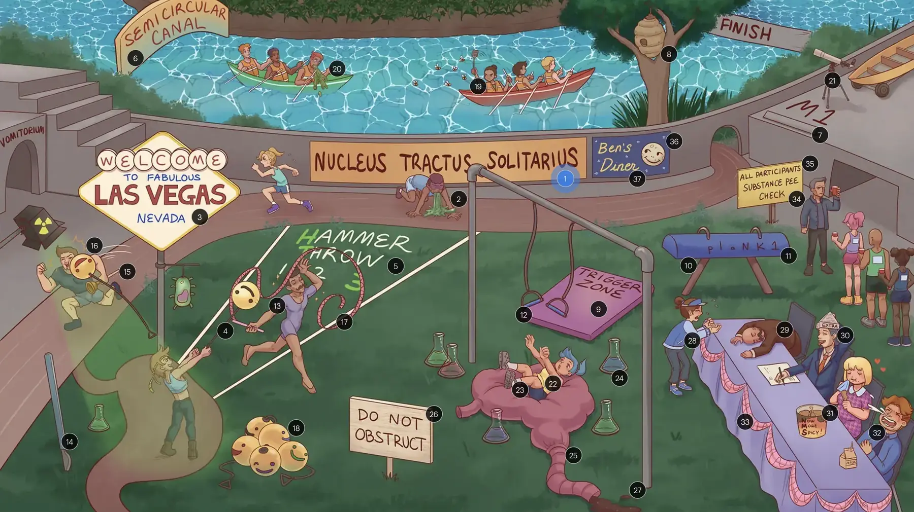
- NTS (medulla) is the vomiting center; inputs: vagal GI afferents (5-HT3), vestibular system (M1, H1), and CTZ in area postrema (D2, NK-1, 5-HT3).
- 5-HT3 antagonists (ondansetron, granisetron, palonosetron): chemotherapy, radiation, postoperative and GI-infection nausea; adverse effects: constipation, headache, QT prolongation, serotonin syndrome.
- D2 antagonists (metoclopramide, prochlorperazine): metoclopramide is also prokinetic for gastroparesis, contraindicated in bowel obstruction; adverse effects: EPS, tardive dyskinesia, NMS, hyperprolactinemia, QT prolongation, depression.
- H1 antagonists (diphenhydramine, meclizine, promethazine) and M1 antagonist scopolamine treat vestibular nausea (motion sickness).
- Aprepitant (NK-1 antagonist) plus 5-HT3 antagonist plus dexamethasone for highly emetogenic chemotherapy; benzodiazepines and cannabinoids are adjuncts.
- 1Nucleus Tractus Solitarius: The nucleus tractus solitarius (NTS) in the medulla is the vomiting center. It integrates input from the GI tract, vestibular system and chemoreceptor trigger zone and coordinates the emetic response.⭐ Antiemetics work by blocking one of the inputs to the NTS.
- 2Vomiting: The NTS (vomiting center) coordinates the vomiting response to many different emetogenic stimuli.
- 3Las Vegas near stomach patch: The GI tract signals the NTS mainly through the vagus nerve (CN X) afferents.
- 4Happy face hammer throw: Enterochromaffin cells in the GI mucosa release serotonin in response to GI irritants. Serotonin activates 5-HT3 receptors on vagal afferent nerves, which stimulate the NTS and cause nausea and vomiting.
- 5Hammer Throw 1,2,3: Same pathway: GI irritants cause serotonin release from enterochromaffin cells, 5-HT3 receptors on vagal afferents are activated, and the NTS triggers nausea and emesis.⭐ The 5-HT3 receptor is a ligand-gated ion channel, unlike most other serotonin receptors.
- 6Semicircular canal: Stimulation of the vestibular system (e.g. motion) causes vestibular nausea, mediated by M1 muscarinic and H1 histamine receptors.
- 7M1 parking spot: Vestibular input reaches the NTS via CN VIII, with M1 (muscarinic) and H1 (histamine) receptors as the key neurotransmitter receptors.
- 8Beehive: Histamine (H1) and acetylcholine (M1) receptor activation in the vestibular system drives the NTS (via CN VIII), producing vestibular nausea.
- 9Trigger Zone: The chemoreceptor trigger zone (CTZ) senses emetogenic substances (drugs, toxins, metabolites) in the blood and CSF of the 4th ventricle. It is not protected by a well-developed blood-brain barrier.
- 10Pommel horse for posturing: The CTZ is located in the area postrema on the floor of the 4th ventricle.⭐ Area postrema lies outside the effective blood-brain barrier, so it can sample blood-borne emetogens.
- 11plaNK-1: NK-1 (neurokinin-1) receptors, which bind substance P, are found in the CTZ and contribute to nausea and vomiting.
- 12D-shaped rings: Dopamine D2 receptors are located in the CTZ; stimulation causes nausea and vomiting.
- 13Dancer blocking hammer throw: Ondansetron is a 5-HT3 receptor antagonist that blocks serotonin action at 5-HT3 receptors on vagal afferents. Others include granisetron, dolasetron and palonosetron (-setron suffix).⭐ The -setron drugs are first-line for chemotherapy-induced nausea and vomiting and for postoperative nausea.
- 14Chemical flask bottle, radiation spotlight, bacteria lamp, scalpel javelin: 5-HT3 antagonists such as ondansetron treat nausea and vomiting caused by chemotherapy, radiation, GI infections (gastroenteritis) and surgery.
- 15Plunger baton: Constipation is an adverse effect of 5-HT3 antagonists such as ondansetron.
- 16Hit in the head: Headache and dizziness are adverse effects of 5-HT3 antagonists such as ondansetron.
- 17Dancer's torsading ribbon: 5-HT3 antagonists (ondansetron) can prolong the QT interval and predispose to torsades de pointes.⭐ Use caution with other QT-prolonging drugs and electrolyte abnormalities.
- 18Pile of smiley faces: Ondansetron can contribute to serotonin syndrome, especially when combined with other serotonergic drugs such as SSRIs.⭐ Serotonin syndrome: hyperthermia, clonus, agitation, diarrhea, autonomic instability.
- 19Bee swatter: Antihistamines are H1 receptor antagonists. First-generation agents (diphenhydramine, meclizine, promethazine) cross the blood-brain barrier and block central H1 receptors.⭐ First-generation agents are sedating and have anticholinergic effects.
- 20Seasickness + life vests: H1 antagonists (antihistamines) and M1 antagonists (antimuscarinics) treat vestibular nausea such as seasickness and motion sickness.
- 21Telescope blocking the M1 parking spot: Scopolamine is a muscarinic (M1) receptor antagonist used for motion sickness, often as a transdermal patch.⭐ Anticholinergic effects: dry mouth, blurred vision, urinary retention, confusion.
- 22Fallen off the D rings: Metoclopramide is a D2 receptor antagonist. Others include prochlorperazine (also blocks H1 and M1 receptors) and olanzapine (an antipsychotic that also blocks serotonin receptors).⭐ Prochlorperazine and promethazine are phenothiazine antiemetics.
- 23Metal clogs: Metoclopramide acts as a D2 receptor antagonist, blocking dopamine signaling in the CTZ.⭐ It also has prokinetic activity (5-HT4 agonism in the gut).
- 24Chemical flasks: D2 antagonists such as metoclopramide are used to prevent and treat chemotherapy-induced nausea and vomiting.
- 25Pushing out brown liquid: Metoclopramide increases gastric emptying (prokinetic) and is used for gastroparesis, for example in diabetic patients.
- 26Do not obstruct: Metoclopramide is contraindicated in small bowel (mechanical GI) obstruction because increased motility can cause harm or perforation.
- 27Brown liquid: Diarrhea is an adverse effect of D2 antagonists such as metoclopramide (increased GI motility).
- 28Crying at judge: Depression is an adverse effect of D2 antagonists including metoclopramide.
- 29Passed out judge: Drowsiness and fatigue are adverse effects of D2 antagonists including metoclopramide.
- 30Extra pyramid newspaper hat + stuck out tongue: D2 antagonists can cause extrapyramidal symptoms (acute dystonia, akathisia, parkinsonism) and tardive dyskinesia with chronic use.⭐ Metoclopramide: avoid prolonged use (greater than 12 weeks) because of tardive dyskinesia risk.
- 31Now More Spicy!: Neuroleptic malignant syndrome (fever, rigidity, altered mental status, autonomic instability, elevated CK) is a rare adverse effect of D2 antagonists including metoclopramide.⭐ Treat with stopping the drug, supportive care, dantrolene or bromocriptine.
- 32Shooting milk upwards: D2 blockade removes dopamine's inhibition of prolactin, causing hyperprolactinemia (galactorrhea, gynecomastia, amenorrhea).
- 33Torsades ribbon: QT prolongation is an adverse effect of D2 antagonists including metoclopramide.
- 34Substance Pee Check: Substance P activates NK-1 receptors in the CTZ, contributing to nausea and vomiting.
- 35All Participants: Aprepitant is an NK-1 receptor antagonist (-pitant suffix). It is typically combined with a 5-HT3 antagonist and dexamethasone for highly emetogenic chemotherapy.⭐ Aprepitant is a CYP3A4 substrate and moderate inhibitor; it is especially useful for delayed chemotherapy-induced emesis.
- 36Moon face: Glucocorticoids (dexamethasone, methylprednisolone), benzodiazepines and cannabinoids have additional antiemetic effects and may be added to regimens, particularly for chemotherapy-induced nausea and vomiting.⭐ Benzodiazepines (e.g. lorazepam) help anticipatory nausea.
- 37Ben's Diner advertisement: Glucocorticoids, benzodiazepines and synthetic cannabinoids (dronabinol, nabilone) are adjunct antiemetics for chemotherapy-induced nausea and vomiting.
Show the original legend picture
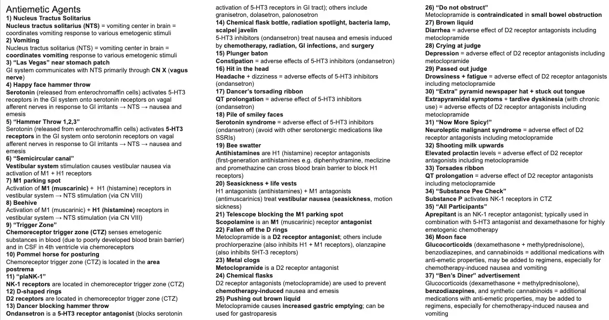
2. H2 Receptor Blockers & PPIs
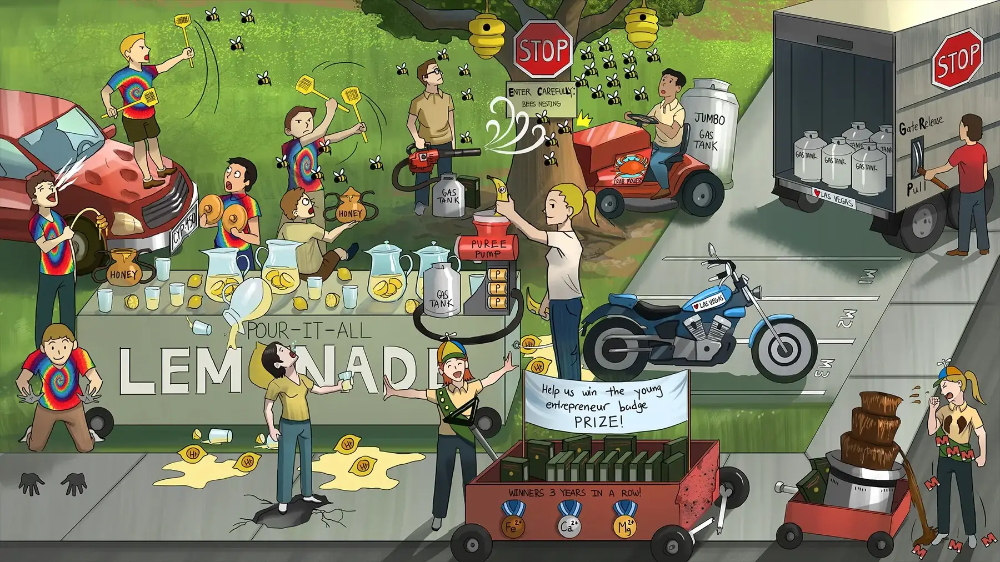
- Acid secretion by parietal cells is stimulated by histamine (ECL, H2, Gs, cAMP), acetylcholine (vagus, M3, Gq) and gastrin (G cells, CCK-B, Gq); ECL histamine is gastrin's main route.
- H2 blockers (-tidine: cimetidine, ranitidine, famotidine, nizatidine) block H2 receptors; used for GERD and duodenal ulcer but PPIs are first line.
- Cimetidine: CYP450 inhibitor and antiandrogen (gynecomastia, impotence, raised prolactin).
- PPIs (-prazole) irreversibly inhibit H+/K+ ATPase: first line for GERD, ulcers, H. pylori regimens and Zollinger-Ellison; adverse effects: C. diff, pneumonia, fractures, hypomagnesemia, reduced Ca/Fe/Mg/B12 absorption.
- Somatostatin inhibits G cells and ECL cells; octreotide (long-acting analog) can treat gastrinoma/Zollinger-Ellison.
- 1Pour it all: Parietal cells of the gastric mucosa (body and fundus) are responsible for gastric acid (HCl) secretion.
- 2Battery powered puree pump: The H+/K+ ATPase (proton pump) on the luminal (apical) membrane of the parietal cell pumps H+ into the stomach lumen.
- 3Banana into the pump, lemons out: The H+/K+ ATPase exchanges one K+ (into the cell) for one H+ (into the lumen).
- 4Sidewalk: The sidewalk represents the lumen of the stomach.
- 5Three P batters: The proton pump is an ATPase: acid secretion is an ATP-driven (active) process.
- 6Bees swarming honey pot: Histamine, released by ECL cells, binds H2 receptors on the parietal cell to stimulate acid secretion.
- 7Honey pot with 2 S handles: H2 receptors are on the basolateral membrane and are Gs-coupled, increasing cAMP (via adenylyl cyclase).⭐ Gs (H2) increases cAMP; Gq (M3, gastrin/CCK-B) increases IP3/Ca2+.
- 8Honey pot kid knocking over acid pitcher: H2 receptor activation (cAMP and protein kinase A) increases activity and insertion of the H+/K+ ATPase, increasing acid secretion.
- 9Enter CarefuLly: Enterochromaffin-like (ECL) cells are in the gastric mucosa near parietal cells.
- 10Bees released from ECL tree: ECL cells release histamine, which acts on parietal cells in a paracrine fashion.
- 11Gas Powered blower releasing bees from ECL tree: Gastrin, released by G cells, stimulates ECL cells to release histamine (this is gastrin's major route of stimulating acid secretion).
- 12Gas truck releasing gas tanks: G cells (in the gastric antrum) release gastrin, which acts on ECL cells and parietal cells.
- 13Gas powered acid pump: Gastrin also acts directly on parietal cell CCK-B (gastrin) receptors to stimulate H+ secretion, but this is a minor effect; its major effect is histamine release from ECL cells.
- 14Motorcycle attached to stand in M3: M3 muscarinic acetylcholine receptors are located on the parietal cell (Gq-coupled, increase IP3 and Ca2+).
- 15Vegas sticker: Vagal stimulation (acetylcholine) directly stimulates the parietal cell through M3 receptors.⭐ Vagus also acts on ECL cells (histamine release).
- 16Vegas Sticker: Vagal stimulation also causes G cells to release gastrin, via gastrin-releasing peptide (GRP).
- 17Gate release pull: Gastrin-releasing peptide (GRP, bombesin-like), released by vagal nerve endings, activates G cells.
- 182 bee swatters: H2 receptor antagonists (e.g. ranitidine, cimetidine) block histamine at the parietal cell H2 receptor and reduce acid secretion.⭐ H2 blockers reduce acid mainly by blocking histamine and are most effective for nocturnal acid secretion.
- 19Tie dye t shirt: H2 antagonists share the -tidine suffix: cimetidine, ranitidine, famotidine, nizatidine.⭐ Ranitidine was withdrawn from many markets because of NDMA contamination.
- 20Gargling: H2 blockers treat GERD (mild or intermittent symptoms), but PPIs are first line.
- 21Ulcerated sidewalk: H2 blockers can be used for duodenal ulcers, though PPIs are first line.
- 22Tie dye kid on the cement: Cimetidine is the H2 blocker with antiandrogenic effects and the most drug interactions and adverse effects of the class.
- 23Dented chrome bumper: Cimetidine inhibits the cytochrome P-450 system and raises levels of drugs metabolized by it (e.g. warfarin, phenytoin, theophylline).⭐ Famotidine and nizatidine have minimal CYP inhibition.
- 24Pot lids on chest: Cimetidine can cause gynecomastia with long-term or high-dose use (antiandrogen effect).
- 25Droopy honey wand: Cimetidine can cause impotence (erectile dysfunction) via antiandrogenic effects.
- 26Milk shooting from nose: Cimetidine can raise serum prolactin levels (galactorrhea/hyperprolactinemia).
- 27Girl scout blocking puree pump: Proton pump inhibitors (PPIs) irreversibly bind and inhibit the H+/K+ ATPase, the final common pathway for acid secretion.⭐ PPIs are prodrugs activated in acidic canaliculi and work best taken 30 minutes before meals; effect lasts until new pumps are synthesized.
- 28PRIZE: PPIs share the -prazole suffix: omeprazole, esomeprazole, lansoprazole, pantoprazole, rabeprazole.
- 29Gargling: H2 blockers treat GERD, but PPIs are first line because they suppress acid more effectively.
- 30Ulcerated sidewalk: PPIs relieve symptoms and heal gastric and duodenal ulcers faster than H2 blockers.⭐ Discontinue NSAIDs and test for H. pylori in peptic ulcer disease.
- 31Jumbo gas tank on mower with crab logo: A gastrinoma causes excessive gastrin and gastric acid hypersecretion (Zollinger-Ellison syndrome), treated with high-dose PPIs.⭐ Zollinger-Ellison: refractory, multiple or distal ulcers, diarrhea; check fasting gastrin and secretin stimulation test; associated with MEN1.
- 32Swarm of bees over lawn mower: Excess gastrin acts mainly by increasing histamine release from ECL cells, which stimulates parietal cells (and also directly); PPIs are the best medical treatment.
- 33Helicopter hat: PPIs are part of H. pylori eradication regimens, combined with clarithromycin plus amoxicillin or metronidazole (triple therapy).⭐ Bismuth quadruple therapy: PPI, bismuth, metronidazole, tetracycline.
- 34Chocolate fondue fountain: PPIs increase the risk of Clostridioides difficile infection (loss of gastric acid barrier).
- 35Dirty lung spots: PPIs increase the risk of respiratory infections such as pneumonia.
- 36Medals bound to wagon: PPIs decrease absorption of Ca2+ (calcium carbonate), Mg2+ and iron, which need an acidic environment; also B12 can be reduced.
- 37Fractured Axel: Long-term PPI use increases the risk of osteoporotic fractures, including hip fracture, partly due to reduced calcium absorption.
- 38Porous wood: PPIs may worsen osteoporosis because of decreased calcium absorption.
- 39Falling magnets on girl scout: PPIs can cause hypomagnesemia (reduced Mg2+ absorption), which can lead to arrhythmias or tetany.
- 40Stop sign: Somatostatin (from D cells) inhibits histamine release from ECL cells, reducing acid secretion.
- 41Stop sign: Somatostatin (SST) inhibits gastrin release from G cells, and its analogs can act on SST-receptor positive gastrinomas.⭐ Acid in the antrum stimulates somatostatin, a negative feedback loop on gastrin.
- 42Octagon shape of stop sign: Octreotide, a long-acting somatostatin analog, inhibits histamine release/ECL cell activity, reducing acid secretion.
- 43Octagon: Octreotide inhibits G cells (gastrin release) and is useful in gastrinoma/Zollinger-Ellison syndrome.⭐ Octreotide is also used for carcinoid syndrome, acromegaly, VIPoma and variceal bleeding.
Show the original legend picture
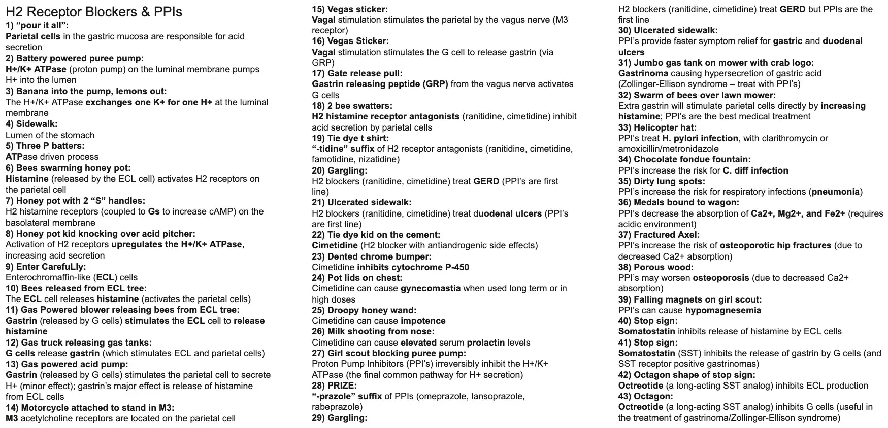
3. Laxatives
- Stepwise treatment of constipation: bulk-forming (psyllium), stool softener (docusate), osmotic (Mg salts, PEG, lactulose), stimulant (senna, bisacodyl), then suppository or enema.
- Osmotic laxatives draw water into the lumen: magnesium products (caution in CKD, chelate tetracyclines), PEG (colonoscopy prep), lactulose (hepatic encephalopathy).
- Lactulose is metabolized by colonic bacteria to acids, trapping NH3 as NH4+; rifaximin kills ammonia-producing bacteria.
- Stimulant laxatives (senna, bisacodyl) activate the enteric nervous system; chronic senna causes melanosis coli; overuse causes hypokalemia and dehydration.
- Secretagogues: lubiprostone (ClC-2 chloride channel activator) and linaclotide (guanylate cyclase-C agonist, raises cGMP) for CIC/IBS-C; peripheral opioid antagonists for OIC.
- 1Toilet cleaning schedule: Constipation is defined by straining, hard stools and fewer than 3 bowel movements per week. It is common in elderly and debilitated patients.⭐ Common causes: low fiber/fluid intake, immobility, opioids, anticholinergics, hypothyroidism, hypercalcemia.
- 2Step-up stool: Constipation is treated stepwise: bulk-forming agent, then stool softener, then osmotic laxative, then stimulant laxative, then enema or suppository.
- 3Psyllium seaweed: Psyllium is a bulk-forming laxative: an indigestible hydrophilic colloid that absorbs water, distends the bowel, stimulates peristalsis and produces a bowel movement.⭐ Other bulk-formers: methylcellulose, polycarbophil. Safest for long-term use.
- 4Ocean water: Bulk-forming laxatives must be taken with adequate water to avoid obstruction or worsening constipation.
- 5SURFboard: Surfactant agents (stool softeners) soften stool by letting water and lipids penetrate into the stool.
- 6DOCKusate: Docusate is a commonly used stool softener, often combined with a stimulant such as senna.
- 7Red cross: Docusate is used in hospitalized patients to prevent constipation and minimize straining (e.g. after surgery or myocardial infarction).⭐ Evidence for efficacy is weak; it is mainly preventive.
- 8Mineral bath: Osmotic laxatives (magnesium compounds, lactulose, polyethylene glycol) are poorly absorbed substances that draw water into the intestinal lumen, causing distention and peristalsis.
- 9Magazine: Magnesium-based compounds (magnesium hydroxide, magnesium citrate) are osmotic laxatives.
- 10Mineral bath timer: Magnesium-based laxatives relieve acute constipation and help prevent chronic constipation (e.g. milk of magnesia).
- 11Shriveled kidney paperweight: Use magnesium-based agents cautiously in chronic kidney disease, because reduced renal excretion can cause hypermagnesemia.⭐ Hypermagnesemia: loss of deep tendon reflexes, hypotension, respiratory depression, cardiac arrest.
- 12Mineral spa filter: Magnesium-based osmotic laxatives can bind (chelate) other drugs such as tetracyclines and reduce their absorption.⭐ Fluoroquinolones also chelate with divalent cations.
- 13Peg drain cover: Polyethylene glycol (PEG) is an osmotic laxative; it is a non-absorbable polymer (not a sugar).
- 14Drain cleaning: Polyethylene glycol (high volume) is used for pre-procedural colonic cleansing, such as before colonoscopy.
- 15Relaxulose: Lactulose is an osmotic laxative: a non-absorbable sugar (disaccharide).
- 16Relaxing bubbles: Lactulose is metabolized by gut bacteria, producing gas that leads to cramping, bloating and flatus.
- 17Relaxulose in liver and brain coral tank: Lactulose is used to treat hepatic encephalopathy.
- 18Cirrhotic liver + brain coral: Hepatic encephalopathy is a neurologic complication of cirrhosis caused by buildup of ammonia and other gut-derived toxins that bypass hepatic clearance.⭐ Precipitants: GI bleed, infection, constipation, hypokalemia, sedatives, high protein load.
- 19Fishing out ammonia: Lactulose prevents absorption of ammonia (produced by gut bacteria) from the GI tract.
- 20Fish eating lactulose: Intestinal bacteria metabolize lactulose to acidic metabolites, causing an acidic shift in luminal pH; NH3 is converted to NH4+.
- 21Acidic pH meter: Bacterial metabolism of lactulose creates acidic metabolites and lowers colonic pH, favoring conversion of NH3 to NH4+.
- 22Positive net: Ammonia (NH3) is trapped as charged ammonium (NH4+) in the acidic lumen, which cannot be absorbed and is excreted in stool (ion trapping).⭐ Lactulose also increases stool frequency, speeding removal of ammonia.
- 23Fisherman kid: Rifaximin is a poorly absorbed antibiotic that reduces ammonia-producing intestinal bacteria and is used to treat (and prevent recurrence of) hepatic encephalopathy, along with lactulose.⭐ Rifaximin is also used for traveler's diarrhea and IBS-D.
- 24Mud bath + spilling water: Laxative use can cause diarrhea and dehydration (with electrolyte disturbances).
- 25Belly rub: Stimulant laxatives directly stimulate the enteric nervous system and increase colonic secretions and motility.
- 26Stimulating suntan lotion: Senna is a stimulant laxative (cathartic) that stimulates the enteric nervous system and colonic secretions.
- 27Sunny side effect: Chronic senna use can cause melanosis coli, a benign brown-black pigmentation of the colon due to toxic effects of anthraquinones on colonic epithelial cells (apoptosis and lipofuscin-like pigment).⭐ Melanosis coli is reversible after stopping the laxative and is not premalignant.
- 28BICYCodal: Bisacodyl is a stimulant laxative available in oral and rectal formulations.
- 29Trashed peanuts + banana + wing: Continuous use of stimulant laxatives can cause hypokalemia, salt loss and protein loss (protein-losing enteropathy), as well as dependence.⭐ Chronic laxative abuse: hypokalemia and metabolic alkalosis (or non-gap acidosis from stool bicarbonate loss).
- 30OUT OF ORDER: Severe constipation may warrant a suppository or enema laxative.
- 31Fart darts: Suppositories (glycerin or bisacodyl formulations) are indicated for severe constipation; they act rapidly in the rectum.
- 32Super pooper: Enemas (e.g. warm tap water) are indicated for severe constipation to evacuate the bowel.⭐ Avoid phosphate enemas in kidney disease because of phosphate absorption.
- 33Lubricating oil: Lubiprostone is indicated for chronic idiopathic constipation (CIC), opioid-induced constipation (OIC) and IBS with constipation (IBS-C) in adult women.⭐ Adverse effects: nausea, diarrhea; avoid in pregnancy.
- 34Spilt chlorine: Lubiprostone activates chloride channels (ClC-2) on the intestinal lumen, causing secretion of chloride-rich fluid; the increased fluid raises intestinal motility and eases passage of stool.
- 35Line of clothes: Linaclotide is indicated for chronic idiopathic constipation (CIC) and IBS with constipation (IBS-C).⭐ Adverse effect: diarrhea; contraindicated in children under 2 years (risk of dehydration).
- 36Grumpy Suds: Linaclotide is a guanylate cyclase-C agonist: it increases intracellular cGMP, which drives chloride secretion, increased luminal fluid and faster intestinal transit.⭐ cGMP also reduces visceral pain signaling in IBS-C.
- 37Dripping clothes: Linaclotide (guanylate cyclase-C agonist) raises cGMP, stimulating chloride (and bicarbonate) secretion, increasing luminal fluid and accelerating transit.
- 38Ruined Mutopia: Peripherally acting mu-opioid receptor antagonists (e.g. methylnaltrexone, naloxegol, naldemedine) are used for opioid-induced constipation (OIC).⭐ Contraindicated in known or suspected mechanical bowel obstruction.
Show the original legend picture
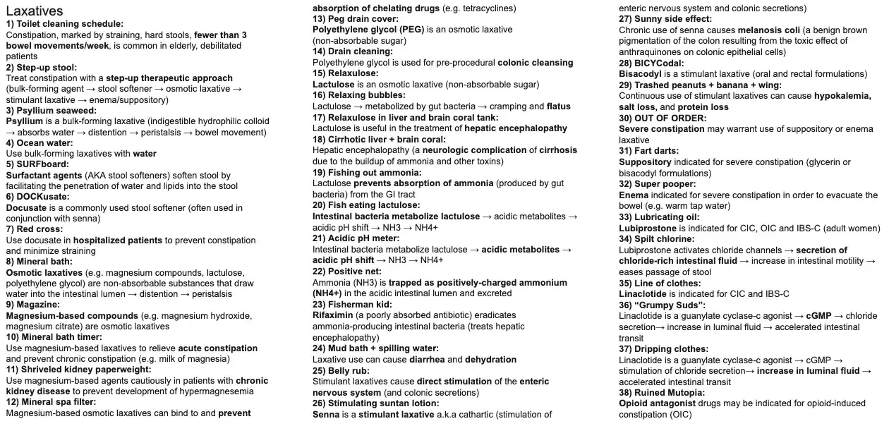
4. Antidiarrheal Agents
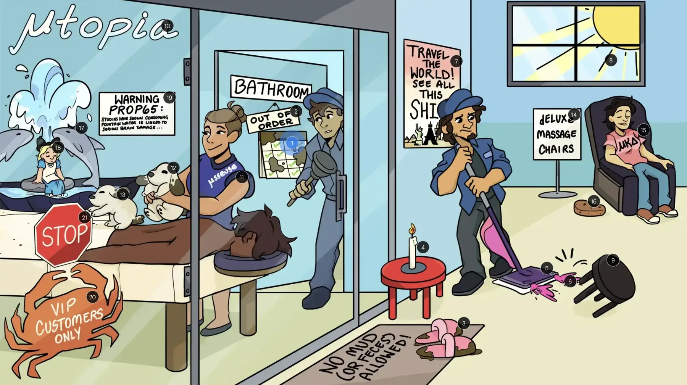
- Antidiarrheals treat a symptom; avoid them in bloody diarrhea or fever.
- Bismuth subsalicylate: antimicrobial and antisecretory; used for traveler's diarrhea; causes black stool and tongue, salicylate toxicity, Reye risk in children.
- Loperamide (mu agonist, no CNS entry) and diphenoxylate-atropine (Lomotil) slow transit by increasing segmenting activity; CYP and P-gp inhibitors raise loperamide levels.
- Eluxadoline (mu and kappa agonist, delta antagonist) treats IBS-D; risk of pancreatitis, contraindicated with gallbladder or pancreatic disease.
- Octreotide (somatostatin analog) treats secretory diarrhea from VIPoma, carcinoid, chemotherapy, HIV, and short bowel.
- 1Poopy cleaning schedule: Diarrhea is 3 or more loose or watery stools per day. It is common and usually self-limited.
- 2Out of order: Diarrhea results from insufficient intestinal water absorption or excessive active water secretion. Acute causes are usually infectious; chronic causes are usually functional disorders or systemic illness.
- 3Muddy slippers on doormat: Antidiarrheal agents treat the symptom, not the cause. Diarrhea can stem from infection, systemic illness, or structural or functional disorders, so the underlying etiology still needs to be addressed.
- 4Red stool + inflammatory candle: Antidiarrheals are contraindicated in bloody diarrhea or fever, which suggest invasive or inflammatory infection (e.g., Shigella, EHEC, C. difficile). Slowing motility can prolong exposure and raise the risk of complications such as toxic megacolon or HUS.⭐ Avoid antimotility drugs in bloody diarrhea, fever, or suspected C. difficile or EHEC.
- 5Adsorptive sweeper: Adsorptive agents (kaolin-pectin, bismuth subsalicylate) bind diarrhea-causing toxins and block bacterial adhesion to the intestinal wall.
- 6Pink cleaning goop: Bismuth subsalicylate is antimicrobial (bismuth salts) and antisecretory (the salicylate inhibits prostaglandin action).
- 7Travel poster: Bismuth subsalicylate is commonly used for traveler's diarrhea. It is also used in H. pylori regimens (bismuth quadruple therapy).
- 8Reye's rays: Bismuth subsalicylate can cause salicylate toxicity and, like aspirin, raises the risk of Reye syndrome in children, especially with viral illness (influenza, varicella).⭐ Avoid in children with viral illness; Reye syndrome = hepatic steatosis plus encephalopathy.
- 9Dropping black stool: Bismuth subsalicylate causes transient, benign blackening of the stool and tongue. Do not mistake it for melena.
- 10Utopia (label garbled in OCR): Opioid agonists (diphenoxylate, loperamide) treat diarrhea.check original
- 11Sausage (label garbled in OCR): Opioid agonists act on mu-opioid receptors in the GI tract, slowing motility and reducing secretion.check original
- 12Lop-eared rabbit: Loperamide is a mu-opioid agonist that does NOT cross the blood-brain barrier at normal doses. It treats acute and chronic diarrhea, including diarrhea-predominant IBS and IBD-related diarrhea. It is available over the counter.⭐ Because it lacks CNS effects, loperamide has low abuse potential at standard doses.
- 13Lop-eared rabbit hopping back and forth: Opioids such as loperamide increase colonic phasic segmenting (non-propulsive) activity. This slows colonic transit and increases water absorption, giving firmer stool. Adverse effects include constipation, abdominal distension, and (rarely) toxic megacolon.
- 14Deluxe Massage Chairs: Eluxadoline is a prescription-only drug for diarrhea-predominant IBS (IBS-D).
- 15Mu Kappa Delta shirt: Eluxadoline is a mu and kappa opioid receptor agonist and a delta opioid receptor antagonist.
- 16Pancreatitis sponge: Eluxadoline is associated with pancreatitis and is contraindicated in patients with a history of pancreatic disease or biliary (gallbladder) disease, sphincter of Oddi dysfunction, or heavy alcohol use.⭐ Contraindicated without a gallbladder or with prior pancreatitis.
- 17Dolphins: Diphenoxylate is a mu-opioid agonist that can cross the blood-brain barrier to some degree. It is combined with atropine to discourage abuse.
- 18Atropine Alice: Atropine is combined with diphenoxylate (Lomotil) in subtherapeutic doses. At high doses it causes unpleasant anticholinergic effects, deterring overdose or abuse of the opioid (euphoria, physical dependence).⭐ Lomotil overdose in a child: respiratory depression plus anticholinergic signs; treat with naloxone.
- 19Warning sign: All opioids carry abuse potential, including misuse at non-therapeutic doses. Loperamide levels can rise with CYP inhibitors (e.g., cimetidine, grapefruit juice) or P-glycoprotein inhibitors (e.g., erythromycin), increasing systemic and CNS exposure.⭐ Loperamide at very high doses can cause QT prolongation and arrhythmias.
- 20VIP customers only crab: VIPoma and carcinoid tumors cause secretory diarrhea (VIP and serotonin respectively).⭐ VIPoma: watery diarrhea, hypokalemia, achlorhydria (WDHA).
- 21Octagon stop sign: Octreotide, a somatostatin analog, treats the symptoms of VIPoma and carcinoid syndrome (secretory diarrhea). It can also be used for diarrhea from chemotherapy, HIV, or short bowel syndrome.⭐ Octreotide is also used for acromegaly, variceal bleeding, and gallstone risk is an adverse effect.
Show the original legend picture
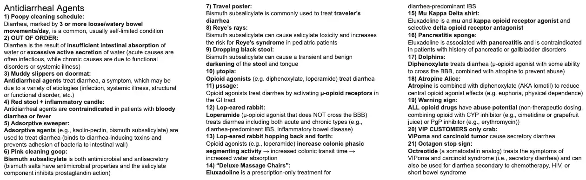
5. TNF Inhibitors
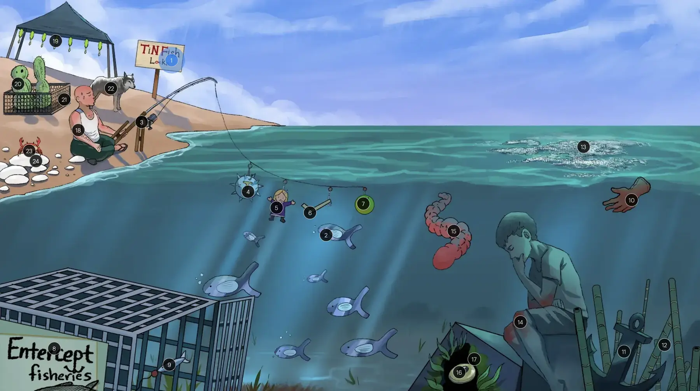
- Infliximab (chimeric), adalimumab and golimumab (human), certolizumab (PEGylated Fab) are anti-TNF-alpha mAbs; etanercept is a TNF receptor-IgG1 Fc decoy.
- Indications: RA, ankylosing spondylitis, psoriatic arthritis, plaque psoriasis, polyarticular JIA, IBD (not etanercept), uveitis and hidradenitis suppurativa (adalimumab).
- Classic toxicity: reactivation of latent TB and other opportunistic infections; screen with TST or IGRA before starting.
- Other adverse effects: drug-induced lupus (infliximab, etanercept), skin and infusion reactions, lymphoma and nonmelanoma skin cancer.
- Ankylosing spondylitis = HLA-B27, bamboo spine; TNF-alpha maintains granulomas, hence TB risk.
- 1TNF Fish lake: TNF inhibitors are anti-inflammatory biologics used for rheumatoid arthritis, ankylosing spondylitis, psoriatic arthritis, plaque psoriasis, polyarticular juvenile idiopathic arthritis, inflammatory bowel disease, hidradenitis suppurativa, and uveitis.
- 2Alpha-shaped TNF fish: TNF inhibitors neutralize TNF-alpha, a pro-inflammatory cytokine produced mainly by macrophages that drives inflammation and granuloma maintenance.
- 3Antibody-shaped fishing rod: The monoclonal antibody TNF inhibitors are infliximab, adalimumab, certolizumab, and golimumab (all end in -mab).⭐ Etanercept is the only TNF inhibitor that is not a monoclonal antibody.
- 4Inflictor lure: Infliximab is a chimeric (mouse/human) anti-TNF-alpha monoclonal antibody, given IV. It can cause infusion reactions and anti-drug antibodies.⭐ Infliximab is the one used for severe or fistulizing Crohn disease.
- 5A doll lure: Adalimumab is a fully human anti-TNF-alpha monoclonal antibody, given subcutaneously.
- 6Certified lure: Certolizumab is a PEGylated antigen-binding (Fab') fragment of a humanized anti-TNF-alpha antibody. It lacks an Fc portion.
- 7Go lure: Golimumab is a fully human anti-TNF-alpha monoclonal antibody, given subcutaneously (or IV for some indications).
- 8Entercept trap: Etanercept is a fusion protein of the TNF receptor and the Fc portion of human IgG1. It acts as a decoy receptor that binds TNF-alpha.
- 9Decoy TNF fish: Etanercept is a decoy receptor for TNF-alpha, soaking it up so it cannot bind cell-surface receptors.⭐ Etanercept is not effective for IBD and is not used for it.
- 10Red glove: Rheumatoid arthritis (RA) is treated with all five TNF inhibitors: infliximab, adalimumab, certolizumab, golimumab, and etanercept. Infliximab is given with methotrexate.
- 11Anchor: Ankylosing spondylitis (AS) is treated with all five: infliximab, adalimumab, certolizumab, golimumab, and etanercept.
- 12Bamboo: Bamboo spine (vertebral fusion with syndesmophytes) is the classic radiographic finding in ankylosing spondylitis. AS is HLA-B27 associated and causes sacroiliitis.⭐ AS in a young man with morning back stiffness improving with exercise = HLA-B27, bamboo spine.
- 13Silvery scale patches of algae: Psoriatic arthritis (infliximab, certolizumab, golimumab, etanercept; adalimumab also used) and plaque psoriasis (infliximab, adalimumab, certolizumab, etanercept) respond to TNF inhibitors.
- 14Statue of juvenile + red algae covering knees/elbows: Polyarticular juvenile idiopathic arthritis (JIA) is treated with adalimumab, golimumab, and etanercept.
- 15Red intestine worm: Inflammatory bowel disease: infliximab, adalimumab, and certolizumab for Crohn disease; infliximab, adalimumab, and golimumab for ulcerative colitis.
- 16Fish eye: Uveitis is treated with adalimumab.
- 17Goo: Hidradenitis suppurativa (recurrent abscesses and sinus tracts in intertriginous areas) is treated with adalimumab.
- 18Sunburnt skin: TNF inhibitors increase the risk of skin reactions, including injection-site or infusion reactions and psoriasiform rashes.
- 19Bug lights: TNF inhibitors increase the risk of serious and opportunistic infections, including fungal infections and hepatitis B reactivation, because TNF-alpha is needed for host defense.
- 20Cavitary lung cactus: TNF inhibitors can reactivate latent tuberculosis, because TNF-alpha is required to maintain granulomas.⭐ Latent TB reactivation is the classic TNF inhibitor adverse effect.
- 21Screen around cactus: Screen for latent TB with a tuberculin skin test or interferon-gamma release assay before starting a TNF inhibitor. Also screen for hepatitis B.
- 22Wolf dog: TNF inhibitors increase the risk of drug-induced lupus, most commonly with infliximab and etanercept. Anti-histone antibodies are characteristic.⭐ Drug-induced lupus: anti-histone antibodies; also anti-TNF can cause new demyelinating disease and worsen heart failure.
- 23Crab: TNF inhibitors are associated with an increased risk of malignancy.
- 24White stones: Malignancy risk includes lymphomas (e.g., hepatosplenic T-cell lymphoma, mainly with infliximab and adalimumab in young males with IBD) and nonmelanoma skin cancers.
Show the original legend picture
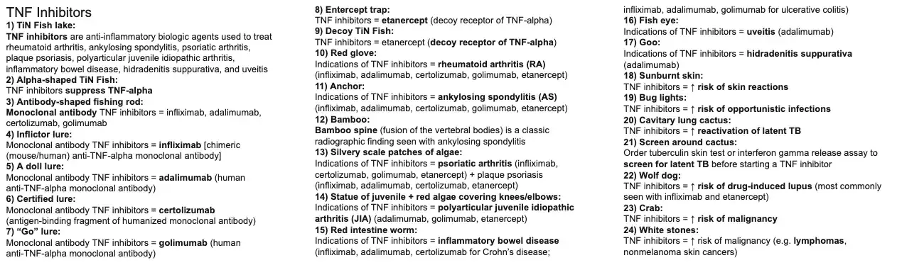
6. First-Generation Antipsychotics
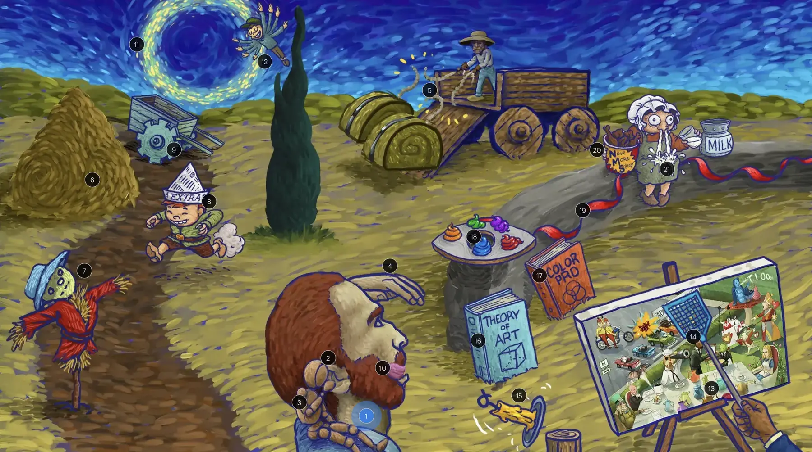
- FGAs block D2 receptors; used for schizophrenia (positive symptoms), mania, agitation, and Tourette syndrome.
- High potency (haloperidol, fluphenazine, trifluoperazine, pimozide): more EPS - dystonia (minutes), akathisia (days), parkinsonism (weeks), tardive dyskinesia (months to years).
- Low potency (chlorpromazine, thioridazine): anticholinergic, antihistamine (sedation), and alpha-1 blocking effects; corneal deposits (chlorpromazine), retinal deposits (thioridazine).
- Other toxicities: QT prolongation and torsades, neuroleptic malignant syndrome, hyperprolactinemia.
- Treatment: benztropine for dystonia and parkinsonism, propranolol for akathisia, VMAT2 inhibitors for tardive dyskinesia, dantrolene for NMS.
- 1Typical post-impressionist: First-generation (typical) antipsychotics (FGAs) treat schizophrenia, agitation, acute mania in bipolar disorder, psychosis, and Tourette syndrome.
- 2Marionette whispering in ear: FGAs treat positive symptoms of psychosis such as hallucinations and delusions, which are driven by excess mesolimbic dopamine.⭐ FGAs treat positive symptoms better than negative symptoms.
- 3Marionette: FGAs are used for schizophrenia, agitation, bipolar mania, psychosis, and Tourette syndrome (haloperidol, pimozide are used for tics).
- 4Gazing: Many FGAs end in -azine (phenothiazines): trifluoperazine, fluphenazine, chlorpromazine, thioridazine. Haloperidol and pimozide are non-phenothiazine FGAs.
- 5Snapped rope + 2 D-shaped bales of hay: FGAs act by blocking dopamine D2 receptors in the CNS.⭐ Blockade in the tuberoinfundibular pathway causes hyperprolactinemia; in the nigrostriatal pathway it causes EPS.
- 6Pyramid of hay: Extrapyramidal symptoms are a hallmark of high-potency FGAs: acute dystonia, akathisia, parkinsonism, and tardive dyskinesia (see the following entries).
- 7Cocked scarecrow: Acute dystonia: sudden muscle spasms (torticollis, oculogyric crisis, laryngospasm) occurring within minutes to hours of starting a drug. Treat with benztropine or diphenhydramine.⭐ Acute dystonia: anticholinergic (benztropine, diphenhydramine).
- 8Restless child: Akathisia: subjective restlessness and inability to sit still, occurring within days. Treat with beta-blockers (propranolol), benzodiazepines, or lowering the dose.⭐ Akathisia: propranolol or benzodiazepines.
- 9Cog wheels: Drug-induced parkinsonism: bradykinesia, rigidity (cogwheel), and tremor, occurring within weeks. Treat with benztropine or amantadine, or by switching to a lower-potency or atypical agent.
- 10Tongue sticking out: Tardive dyskinesia: involuntary, repetitive orofacial movements (lip smacking, tongue protrusion) after months to years of use. It may be irreversible. Treat by stopping or switching the drug and with VMAT2 inhibitors (valbenazine, deutetrabenazine).⭐ Tardive dyskinesia: VMAT2 inhibitors (valbenazine, deutetrabenazine).
- 11Halo high in sky: High-potency FGAs include haloperidol, trifluoperazine, fluphenazine, and pimozide. Haloperidol is given as a long-acting depot injection and is common in acute agitation.⭐ Mnemonic: Try to Fly high: Trifluoperazine, Fluphenazine, Haloperidol (high potency).
- 12Trying to fly: The high-potency agents (trifluoperazine, fluphenazine, haloperidol, pimozide) have more EPS but fewer anticholinergic, antihistamine, and alpha-blocking effects.
- 13Tea party: Low-potency FGAs have antimuscarinic effects: dry mouth, urinary retention, constipation, and blurred vision from mydriasis (and risk of angle-closure glaucoma).⭐ Anticholinergic: dry as a bone, blind as a bat, red as a beet, hot as a hare.
- 14Swatting bees: Low-potency FGAs block H1 histamine receptors, causing sedation and weight gain.
- 15Extinguished alpha flame: Low-potency FGAs block alpha-1 adrenergic receptors, causing orthostatic hypotension, dizziness, and reflex tachycardia.
- 16Theory of Art: Low-potency FGAs include thioridazine (sounds like Theory of Art) and chlorpromazine.
- 17Color-Pro: Low-potency FGAs include chlorpromazine (Color-Pro) and thioridazine. They have fewer EPS but more anticholinergic, antihistamine, and alpha-blocking effects.⭐ Low potency = more anticholinergic, antihistamine, alpha-1 effects; high potency = more EPS.
- 18Globs of paint on eye-shaped palette: Thioridazine causes retinal deposits (retinitis pigmentosa-like, with visual loss); chlorpromazine causes corneal and lens deposits. Chlorpromazine can also cause photosensitivity and blue-gray skin discoloration.⭐ Thioridazine = retinal deposits; chlorpromazine = corneal deposits.
- 19Twisted streamer: Other FGA effects include QT prolongation (torsades de pointes), neuroleptic malignant syndrome, and hyperprolactinemia. Thioridazine has the greatest QT risk.⭐ NMS: fever, rigidity, autonomic instability, elevated CK; treat with stopping the drug, dantrolene, and supportive care; bromocriptine is also used.
- 20Now More Spicy: Neuroleptic malignant syndrome (NMS) is a life-threatening reaction with high fever, lead-pipe rigidity, altered mental status, autonomic instability, and elevated creatine kinase.⭐ NMS: dantrolene (and bromocriptine) plus stopping the offending agent.
- 21Snorting milk: Hyperprolactinemia results from D2 blockade (loss of dopamine inhibition of prolactin): galactorrhea, gynecomastia, amenorrhea, and sexual dysfunction.
Show the original legend picture
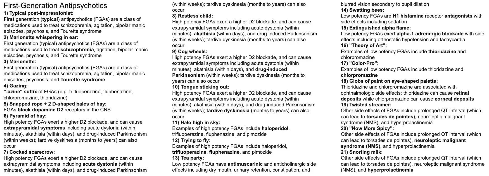
7. Second-Generation Antipsychotics
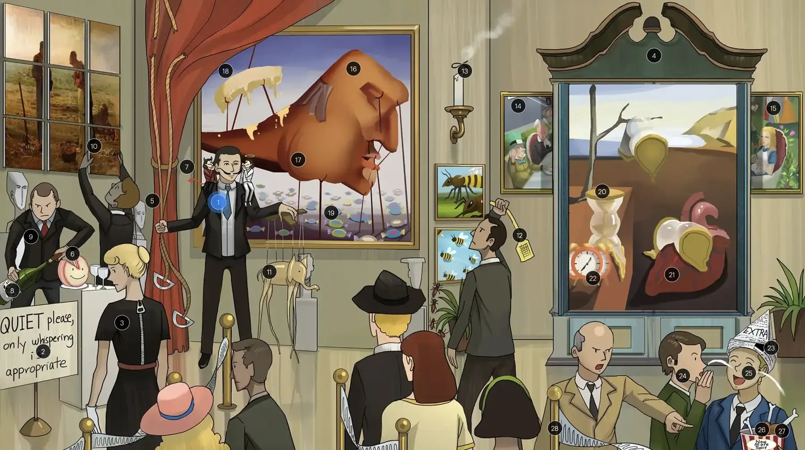
- SGAs (quetiapine, olanzapine, risperidone, aripiprazole, ziprasidone, clozapine) antagonize D2 and 5-HT2A receptors; aripiprazole is a partial D2 agonist.
- Treat schizophrenia (positive and negative symptoms); also bipolar disorder, adjunct in treatment-resistant depression and OCD, and Tourette (risperidone).
- Side effects from receptor blockade: H1 (sedation, weight gain), alpha-1 (orthostatic hypotension), muscarinic (anticholinergic, esp. clozapine and olanzapine).
- Metabolic syndrome (weight gain, dyslipidemia, hyperglycemia) mainly with olanzapine and clozapine; clozapine also causes agranulocytosis, myocarditis and seizures.
- EPS, hyperprolactinemia and NMS are less frequent than with FGAs (risperidone is worst for EPS/prolactin); QT prolongation and torsades risk (ziprasidone).
- 1Atypical surrealist: Second-generation (atypical) antipsychotics (SGAs): the newer antipsychotic class, with antagonism of both D2 and 5-HT2A receptors and generally fewer extrapyramidal effects than first-generation agents.
- 2Quiet please, only whispering is appropriate: Quetiapine, olanzapine, risperidone and aripiprazole are SGAs. Note the -apine/-idone/-iprazole endings.⭐ Most SGA names end in -apine, -idone or -azole (aripiprazole is a partial D2 agonist).
- 3Zipper: Ziprasidone is an SGA.⭐ Ziprasidone has notable QT prolongation; take with food for absorption.
- 4Closet: Clozapine is an SGA, reserved for treatment-resistant schizophrenia and for reducing suicidality in schizophrenia, because of its serious toxicities.⭐ Clozapine is the most effective antipsychotic for refractory schizophrenia.
- 5Snapping double rope: SGAs block D2 receptors in the CNS (mesolimbic pathway), reducing positive psychotic symptoms.
- 6Cut smiley cake: SGAs also block serotonin 5-HT2A receptors, which is thought to contribute to efficacy against negative symptoms and to the lower rate of EPS and hyperprolactinemia compared with FGAs.
- 7Hearing positive and negative voices: SGAs treat schizophrenia, including both positive symptoms (hallucinations, delusions) and negative symptoms (flat affect, avolition).⭐ FGAs mainly help positive symptoms; SGAs have better (though modest) effect on negative symptoms.
- 8Happy and sad masks: SGAs can treat depression, as adjunctive therapy in treatment-resistant depression (e.g. aripiprazole, quetiapine) and in bipolar depression/mania.
- 9Resisting opening: Treatment-resistant depression: depression that has failed adequate trials of antidepressants; an SGA may be added as augmentation.
- 10Obsessively neat: SGAs (e.g. risperidone) can be used as adjunctive therapy with SSRIs in obsessive-compulsive disorder when SSRI response is inadequate.
- 11Marionette: Risperidone can help manage Tourette syndrome (tics); aripiprazole is also used. Haloperidol and pimozide are classic FGAs for tics.
- 12Bee swatter: SGAs block H1 histamine receptors, causing sedation and contributing to weight gain.⭐ Most H1 blockade: olanzapine, clozapine, quetiapine.
- 13Extinguished alpha candle: SGAs block alpha-1 adrenergic receptors, causing orthostatic hypotension, dizziness and reflex tachycardia.
- 14Antimuscarinic tea party: SGAs, especially clozapine (and olanzapine), block muscarinic receptors: dry mouth, constipation, blurred vision, urinary retention.⭐ Clozapine can paradoxically cause sialorrhea (drooling) despite its anticholinergic activity.
- 15Obscured tea party: SGAs generally have lower muscarinic affinity than low-potency FGAs (e.g. chlorpromazine, thioridazine), so antimuscarinic effects are milder overall.
- 16Passed out: Sedation and orthostatic hypotension result from H1 and alpha-1 blockade respectively; counsel on slow position changes and start low in older patients.
- 17Fat face: SGAs, especially olanzapine and clozapine, cause weight gain (metabolic syndrome risk).⭐ Lowest metabolic risk: aripiprazole and ziprasidone.
- 18Elevated butter: Olanzapine and clozapine can cause dyslipidemia (raised triglycerides and cholesterol).
- 19Bunch of candy: Olanzapine and clozapine can cause hyperglycemia and new-onset type 2 diabetes. Monitor weight, glucose/HbA1c and lipids.
- 20Melting sand timers: Clozapine can cause agranulocytosis (severe neutropenia), requiring regular absolute neutrophil count monitoring (REMS program).⭐ Presents with fever and infection; stop clozapine if ANC falls below the threshold.
- 21Surreal heart: Clozapine can cause myocarditis or cardiomyopathy, typically in the first weeks of therapy (fever, tachycardia, chest pain, raised troponin/CRP).
- 22Shaking clock: Clozapine lowers the seizure threshold in a dose-dependent manner; seizures are a recognized risk.⭐ Bupropion also lowers seizure threshold.
- 23EXTRA pyramid hat: Extrapyramidal symptoms (acute dystonia, akathisia, parkinsonism, and later tardive dyskinesia) result from D2 blockade in the nigrostriatal pathway; risk is FGA > SGA.⭐ Timeline: dystonia (hours-days), akathisia (days-weeks), parkinsonism (weeks-months), tardive dyskinesia (months-years).
- 24Whispering to EXTRA hat: Risperidone has the highest EPS risk among the SGAs (dose-related); clozapine and quetiapine have the lowest.
- 25Elevated milk release: D2 blockade in the tuberoinfundibular pathway removes dopamine inhibition of prolactin, causing hyperprolactinemia (galactorrhea, gynecomastia, amenorrhea, sexual dysfunction); FGA > SGA.⭐ Risperidone and paliperidone cause the most hyperprolactinemia among SGAs; aripiprazole the least.
- 26Now more spicy: Neuroleptic malignant syndrome: mental status change, lead-pipe rigidity, autonomic instability and hyperthermia; risk FGA > SGA but can occur with any antipsychotic.⭐ Treat with stopping the drug, supportive care, dantrolene, bromocriptine.
- 27Bite out of chicken leg: NMS is associated with rhabdomyolysis (elevated CK, myoglobinuria), which can lead to acute kidney injury.
- 28Twisted torsades streamer: SGAs can prolong the QT interval and cause torsades de pointes (notably ziprasidone, and also quetiapine, risperidone).⭐ Obtain baseline ECG; avoid combining with other QT-prolonging drugs.
Show the original legend picture
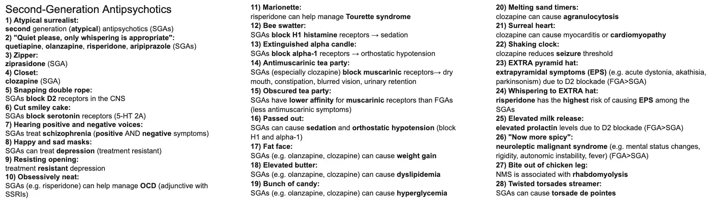
8. SSRIs, SNRIs, Cyproheptadine
- SSRIs (fluoxetine, paroxetine, sertraline, citalopram/escitalopram) block presynaptic serotonin reuptake; SNRIs (venlafaxine, duloxetine) block serotonin and norepinephrine reuptake.
- First-line for depression, GAD, panic disorder, PTSD, social anxiety; SSRIs also for OCD and bulimia; SNRIs also for diabetic neuropathy, chronic pain and fibromyalgia.
- Onset of benefit takes several weeks (about 4-8), so they are not for acute treatment.
- Adverse effects: sexual dysfunction, weight gain, SIADH/hyponatremia, drowsiness or activation; SNRIs can raise blood pressure.
- Serotonin syndrome (hyperthermia, clonus, hyperreflexia, autonomic instability) with combined serotonergic drugs, treated with cyproheptadine; abrupt stop causes flu-like discontinuation syndrome.
- 1expreSS tRips: Selective serotonin reuptake inhibitors (SSRIs): first-line antidepressants with a favorable safety profile compared with TCAs and MAOIs.
- 2Fly out: Fluoxetine (SSRI).⭐ Longest half-life of the SSRIs (active metabolite norfluoxetine), so least discontinuation syndrome; strong CYP2D6 inhibitor.
- 3Parrot: Paroxetine (SSRI).⭐ Most anticholinergic and most severe discontinuation syndrome; associated with fetal cardiac malformations in pregnancy.
- 4Desert Airline: Sertraline (SSRI).⭐ Often preferred in cardiac disease and post-MI patients.
- 5City: Citalopram (SSRI); escitalopram is its S-enantiomer.⭐ Dose-dependent QT prolongation, so maximum doses are capped.
- 6Smiley face: Serotonin (5-HT), the neurotransmitter whose synaptic availability is increased by these drugs.
- 7Keeping post-it out of the drawer: SSRIs inhibit presynaptic reuptake of serotonin (SERT), raising synaptic serotonin levels.
- 8Fax machine: Venlafaxine (SNRI).⭐ Can raise blood pressure at higher doses; desvenlafaxine is its active metabolite.
- 9Dual copier/scanner: Duloxetine (SNRI).
- 10North and South: SNRIs (venlafaxine, duloxetine) inhibit presynaptic reuptake of both norepinephrine and serotonin.
- 11Happy and sad masks: SSRIs and SNRIs are first-line agents for major depressive disorder.
- 125H-TV: Serotonin (5-hydroxytryptamine, 5-HT).
- 13Anxious coworker: SSRIs and SNRIs are first-line for generalized anxiety disorder (GAD).⭐ Buspirone is another non-benzodiazepine option for GAD.
- 14The Scream: SSRIs and SNRIs treat panic disorder (long-term); benzodiazepines may be used short term for acute symptoms.
- 15Dog tags: SSRIs and SNRIs treat PTSD (sertraline and paroxetine are FDA approved).
- 16Obsessively neat: SSRIs are first-line for obsessive-compulsive disorder, often at higher doses than for depression.⭐ Clomipramine is a TCA alternative.
- 17Binge drawer: SSRIs are useful in bulimia nervosa (fluoxetine is approved).⭐ Avoid bupropion in bulimia (seizure risk).
- 18Shy guy: SSRIs are useful in social anxiety disorder; beta-blockers are used for performance-only anxiety.
- 19Pain in the Diasweetes machine: SNRIs (venlafaxine, duloxetine) treat diabetic peripheral neuropathy.⭐ Duloxetine is FDA approved for this; TCAs and gabapentinoids are other options.
- 20Chronically frayed wire: SNRIs treat chronic pain, including neuropathic pain and chronic musculoskeletal pain.
- 21Fiber bars: SNRIs (e.g. duloxetine) treat fibromyalgia.⭐ Duloxetine and milnacipran are approved for fibromyalgia.
- 222 month calendar: SSRIs and SNRIs take roughly 4-8 weeks to reach full effect, so they are not for acute treatment.
- 23Inappropriately wet head: SSRIs may cause hyponatremia via SIADH, particularly in elderly patients.
- 24Rejected advances: SSRIs commonly cause sexual dysfunction (decreased libido, anorgasmia, delayed ejaculation).⭐ Management includes dose reduction, switching, or adding or switching to bupropion.
- 25Fat belly: SSRIs can cause weight gain with long-term use.
- 26Sleeping on the job: SSRIs can cause drowsiness or fatigue in some patients (insomnia and activation can also occur).
- 27Excessive smiley faces: SSRIs and SNRIs can cause serotonin syndrome from excess serotonergic activity.
- 28Hot and hypertensive: Serotonin syndrome includes hyperthermia, hypertension, tachycardia, diaphoresis and altered mental status.
- 29Hyperactive foot tap: Serotonin syndrome causes neuromuscular hyperactivity: hyperreflexia, clonus, tremor, and myoclonus.⭐ Differentiates from NMS (which has bradyreflexia and lead-pipe rigidity with slower onset).
- 30Tricycle and mouse traps: Serotonin syndrome occurs when SSRIs or SNRIs are combined with other serotonergic drugs (TCAs, MAO inhibitors, tramadol, meperidine, linezolid, triptans, St John's wort).⭐ Never start an SSRI within 2 weeks of stopping an MAOI (5 weeks after fluoxetine).
- 31Silly pranks prohibited: Cyproheptadine (5-HT2 antagonist) is used to treat serotonin syndrome, along with stopping the offending drug, supportive care and benzodiazepines.⭐ Cyproheptadine is also an H1 blocker and can be used as an appetite stimulant.
- 32Hypertensive coworker: SNRIs (especially venlafaxine at high doses) can cause hypertension via increased norepinephrine.
- 33Withdrawn with the flu: Abrupt discontinuation of SSRIs and SNRIs causes a discontinuation syndrome: flu-like symptoms, dizziness, nausea, irritability, paresthesias (brain zaps); taper gradually.⭐ Worst with paroxetine and venlafaxine (short half-lives).
Show the original legend picture
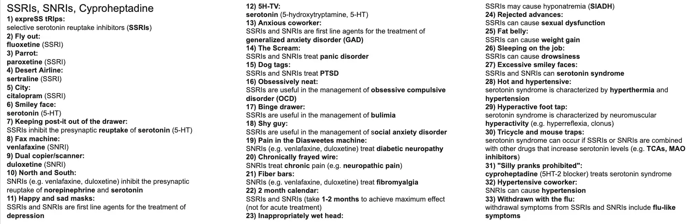
9. Tricyclic Antidepressants
- TCAs (amitriptyline, nortriptyline, imipramine, desipramine, clomipramine) block reuptake of norepinephrine and serotonin.
- Uses: treatment-resistant depression, neuropathic and chronic pain, diabetic neuropathy, migraine prophylaxis, OCD (clomipramine), enuresis (imipramine).
- Receptor blockade side effects: muscarinic (anticholinergic), H1 (sedation, weight gain), alpha-1 (orthostatic hypotension); tertiary amines worse than secondary (nortriptyline, desipramine).
- Avoid in elderly (Beers list); sexual dysfunction and serotonin syndrome risk with other serotonergic drugs.
- Overdose: fast Na+ channel blockade causing wide QRS, arrhythmias, seizures, coma; treat with sodium bicarbonate.
- 1Tricycle: Tricyclic antidepressants (TCAs): older antidepressants with a three-ring structure, now mostly second-line because of toxicity in overdose.
- 2Imprint: Imipramine and its derivatives desipramine and clomipramine are TCAs.⭐ Imipramine is also used for nocturnal enuresis.
- 3Tripping: Amitriptyline and nortriptyline are TCAs.⭐ Amitriptyline is a tertiary amine, commonly used for neuropathic pain and migraine prophylaxis.
- 4Prevented from picking up smiley face and compass balls: TCAs inhibit presynaptic reuptake of serotonin and norepinephrine, increasing their synaptic levels.
- 5Happy and sad masks: TCAs treat major depressive disorder, usually after SSRIs or SNRIs have failed or are not tolerated.
- 6Resistant door: TCAs can be useful in treatment-resistant depression.
- 7Pain from Diasweeties machine: TCAs treat diabetic neuropathy.
- 8Chronically frayed wire: TCAs treat chronic pain, including neuropathic pain.
- 9Pounding head bell: TCAs (especially amitriptyline) can be used for migraine prophylaxis.
- 10Obsessively neat: Clomipramine, a TCA, treats OCD, although SSRIs are first line.⭐ Clomipramine is the most serotonergic TCA.
- 11Rejected advances: TCAs can cause sexual dysfunction.
- 12Anti-muscarinic tea party: TCAs block muscarinic acetylcholine receptors: dry mouth, constipation, blurred vision, urinary retention, tachycardia.⭐ Remember: dry as a bone, red as a beet, blind as a bat, mad as a hatter in overdose.
- 13Northside Prep: Nortriptyline and desipramine are secondary amines, which are the demethylated metabolites of amitriptyline and imipramine respectively.
- 14Protected by secondary sign: Secondary amines (nortriptyline, desipramine) have fewer anticholinergic, antihistamine and alpha-1 effects than tertiary amines, so they are better tolerated.⭐ Tertiary amines: amitriptyline, imipramine, clomipramine, doxepin.
- 15Confused elderly: TCAs are generally avoided in elderly patients (Beers list) because of anticholinergic effects (confusion, delirium, urinary retention) and sedation/orthostasis; if needed, nortriptyline or desipramine are preferred.
- 16Bee swatter: TCAs block H1 histamine receptors, causing sedation.
- 17Hefty kid: TCAs can cause increased appetite and weight gain (H1 blockade).
- 18Sleeping kid: TCAs can cause sedation, often exploited by giving the dose at bedtime.
- 19Extinguished alpha flame: TCAs block alpha-1 adrenergic receptors.
- 20Passed out: Alpha-1 blockade causes orthostatic hypotension and falls, especially in older patients.
- 21Broken hearts: TCA cardiotoxicity (conduction abnormalities and arrhythmias) is the most common cause of death in TCA overdose; CNS toxicity (seizures, delirium, coma) also occurs.
- 22Inactivated peanut butter jar: TCAs block cardiac fast sodium channels (class IA-like effect), slowing conduction.
- 23Wide QRS crack: TCAs widen the QRS complex on ECG; QRS duration greater than 100 ms predicts seizures and arrhythmias.⭐ A terminal R wave in aVR is another ECG sign of TCA toxicity.
- 24Twisted torsades streamer: TCAs can prolong the QT interval and induce torsades de pointes.
- 25Baking soda: Sodium bicarbonate treats TCA-induced QRS widening and ventricular arrhythmias by alkalinizing blood and giving a sodium load.⭐ Do not use class IA or IC antiarrhythmics in TCA overdose. Treat seizures with benzodiazepines.
- 26Shaking kid: TCAs lower the seizure threshold and can induce seizures, especially in overdose.
- 27Stack of smiley faces: TCAs can cause serotonin syndrome, particularly when combined with SSRIs, SNRIs or MAOIs.
Show the original legend picture
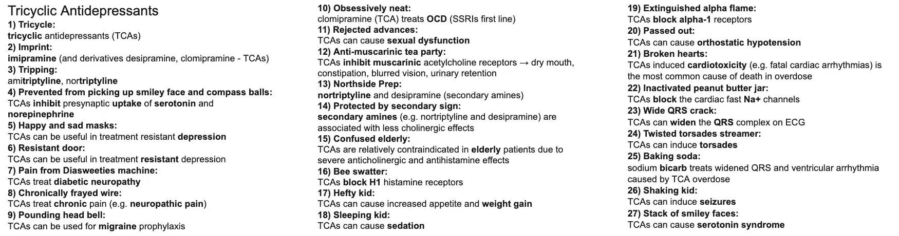
10. MAO Inhibitors
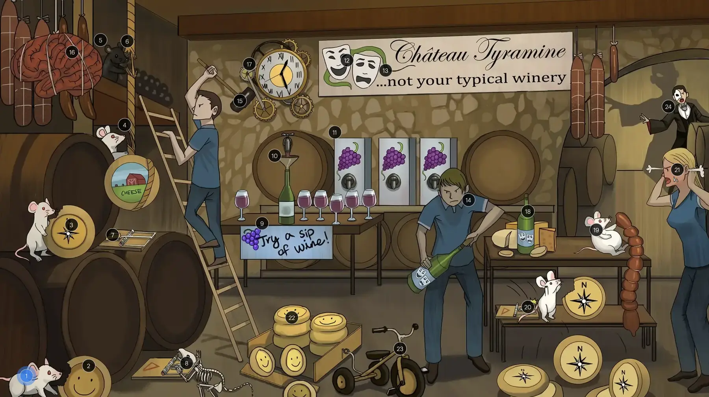
- MAO-A metabolizes serotonin, norepinephrine, dopamine (and dietary tyramine in the gut); MAO-B mainly metabolizes dopamine.
- Nonselective, irreversible MAOIs: tranylcypromine, phenelzine, isocarboxazid; used for atypical and treatment-resistant depression, not first line.
- Selegiline is a selective MAO-B inhibitor that raises CNS dopamine; used in Parkinson disease.
- Tyramine (aged cheese, cured meats, wine) with an MAOI causes hypertensive crisis; manage with phentolamine.
- MAOIs plus SSRIs, SNRIs, TCAs or other serotonergic drugs cause serotonin syndrome.
- 1Albino mouse: Represents monoamine oxidase A (MAO-A), the enzyme that degrades monoamine neurotransmitters and dietary amines.
- 2Albino mouse eating smiley face: MAO-A breaks down serotonin (5-HT).
- 3Albino mouse eating north compass: MAO-A breaks down norepinephrine.
- 4Albino mouse eating rope: MAO-A breaks down dopamine.
- 5Black mouse: Represents monoamine oxidase B (MAO-B).
- 6Black mouse eating rope: MAO-B breaks down dopamine, and is the more selective dopamine-metabolizing isoform in the brain.⭐ This is why selective MAO-B inhibition is used in Parkinson disease.
- 7Mouse trap: MAO inhibitors (MAOIs) block monoamine oxidase, raising synaptic levels of serotonin, norepinephrine and dopamine.
- 8Irreversible trap: The classic antidepressant MAOIs bind irreversibly, so enzyme activity returns only after new enzyme is synthesized (about 2 weeks).⭐ Wait about 2 weeks after stopping an MAOI before starting a serotonergic drug.
- 9'Try a sip of wine': Tranylcypromine, a nonselective MAOI antidepressant.
- 10Funnel: Phenelzine, a nonselective MAOI antidepressant.
- 11Boxed wine: Isocarboxazid, a nonselective MAOI antidepressant.
- 12Happy and sad masks: MAOIs treat depression but are not first line because of dietary restrictions and dangerous drug interactions.
- 13'Not typical': MAOIs are particularly useful in atypical depression (mood reactivity, hypersomnia, hyperphagia, leaden paralysis, rejection sensitivity).
- 14Resistant wine bottle: MAOIs are reserved for treatment-resistant depression after other agents have failed.
- 15Sledge hammer: Selegiline, a selective MAO-B inhibitor at low doses.
- 16Brain tied with rope: Selegiline inhibits MAO-B, reducing dopamine breakdown and increasing CNS dopamine levels.
- 17Cog wheels: Selegiline is used in Parkinson disease (often adjunct to levodopa/carbidopa) because it increases CNS dopamine.⭐ Cogwheel rigidity is a classic Parkinson finding.
- 18Aged meats, wine, cheese: Patients on MAOIs must avoid tyramine-rich foods such as aged cheeses, cured meats and red wine.
- 19Albino mouse eating GI meat: Normally gut MAO-A degrades dietary tyramine so little reaches the circulation.
- 20Trap releasing north compass cheeses: With MAO inhibited, tyramine is absorbed into the circulation and displaces norepinephrine from nerve terminals, acting as an indirect sympathomimetic.
- 21Hypertensive and sweaty: Tyramine toxicity causes a hypertensive crisis: severe headache, hypertension, blurry vision, diaphoresis, possibly stroke.
- 22Pile of smiley faces: MAOIs can cause serotonin syndrome when combined with serotonergic drugs.⭐ Triad: altered mental status, autonomic instability, neuromuscular excitability (clonus, hyperreflexia); treat with cyproheptadine.
- 23Tricycle: Avoid combining MAOIs with other serotonin-raising drugs such as TCAs, SSRIs and SNRIs (also meperidine, dextromethorphan, tramadol), which risks serotonin syndrome.
- 24Phantom of the alpha: Phentolamine, a nonselective alpha-1/alpha-2 blocker, can treat the hypertensive crisis from tyramine toxicity by blocking alpha-mediated vasoconstriction.
Show the original legend picture
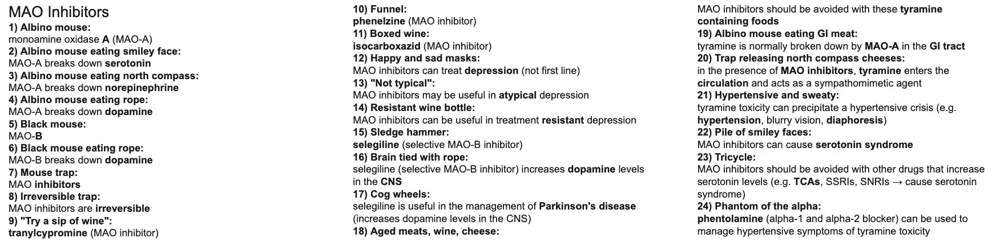
11. Bupropion, Mirtazapine, Trazodone
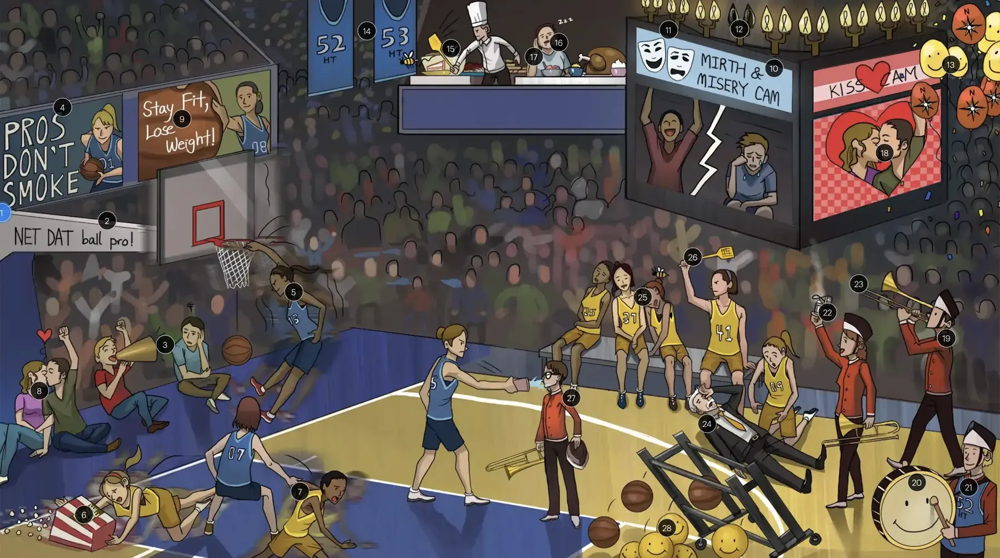
- Bupropion inhibits norepinephrine and dopamine reuptake (NDRI); activating, aids smoking cessation, no sexual dysfunction or weight gain, lowers seizure threshold.
- Bupropion is contraindicated in bulimia, anorexia nervosa and seizure disorders.
- Mirtazapine blocks alpha-2, 5-HT2, 5-HT3 and H1 receptors: increases 5-HT/NE release, causes sedation and weight gain, little sexual dysfunction.
- Trazodone inhibits 5-HT2 (and weakly SERT), blocks alpha-1 and H1: sedation, orthostatic hypotension, priapism.
- Trazodone can cause sexual dysfunction and serotonin syndrome, unlike mirtazapine which spares sexual function.
- 1'NET DAT ball': Bupropion inhibits reuptake of norepinephrine (NET) and dopamine (DAT), increasing both in the synapse.
- 2Pro ball player: Bupropion, an atypical antidepressant (NDRI).
- 3Aroused from sleep: Bupropion has CNS-activating (stimulant-like) effects, which can cause insomnia, anxiety and agitation.
- 4'Pros don't smoke': Bupropion is used for tobacco (nicotine) dependence and smoking cessation.
- 5Shaking: Bupropion lowers the seizure threshold and can induce seizures, particularly at high doses.
- 6Shaking binge snacker: Bupropion is contraindicated in bulimia nervosa because purging/electrolyte disturbance plus lowered seizure threshold raises seizure risk.
- 7Shaking skinny player: Bupropion is contraindicated in anorexia nervosa for the same seizure risk.⭐ Also avoid in seizure disorders and abrupt alcohol or benzodiazepine withdrawal.
- 8Kissing couple: Bupropion does not cause sexual dysfunction, unlike SSRIs; it is a good alternative when sexual side effects occur.
- 9'Lose weight': Bupropion is less likely to cause weight gain and may cause weight loss.
- 10'Mirth and Misery': Mirtazapine, an atypical antidepressant (NaSSA, noradrenergic and specific serotonergic antidepressant).
- 11Happy and sad masks: Atypical antidepressants (bupropion, mirtazapine, trazodone) can be used as first-line agents for depression.
- 12Extinguished double alpha light: Mirtazapine blocks presynaptic alpha-2 receptors (autoreceptors and heteroreceptors).
- 13Released smiley faces and north compasses: Blocking alpha-2 removes negative feedback and increases presynaptic release of serotonin and norepinephrine.
- 14Retired 52 and 53: Mirtazapine also blocks 5-HT2 and 5-HT3 receptors, which reduces anxiety, insomnia and nausea and limits some SSRI-type side effects.
- 15Bee swatter: Mirtazapine antagonizes H1 histamine receptors.
- 16Sleeping fan: Mirtazapine causes sedation (H1 blockade), so it is useful in depression with insomnia.
- 17Hefty fan: Mirtazapine causes weight gain and increased appetite, useful in depressed patients with anorexia or cachexia.⭐ Also a cause of hyperlipidemia; rarely agranulocytosis.
- 18Kissing couple: Mirtazapine does not cause sexual dysfunction because 5-HT2 and 5-HT3 receptors are blocked.
- 19Trombone: Trazodone, a serotonin modulator (SARI).
- 20Smiley face drummer: Trazodone modulates serotonin: it antagonizes 5-HT2 receptors and weakly inhibits serotonin reuptake.
- 21Retired 52: Trazodone blocks 5-HT2A receptors.
- 22Extinguished alpha lighter: Trazodone antagonizes alpha-1 adrenergic receptors.
- 23Erect trombone: Trazodone can cause priapism (alpha-1 blockade).⭐ Priapism is a classic trazodone adverse effect.
- 24Fainting: Trazodone causes orthostatic hypotension from alpha-1 blockade, with dizziness and syncope.
- 25Sleeping players: Trazodone causes sedation; at low doses it is widely used for insomnia.
- 26Bee swatter: Trazodone blocks H1 histamine receptors, contributing to sedation.
- 27Rejected advances: Trazodone can cause sexual dysfunction (decreased libido and other effects), though less than SSRIs.
- 28Pile of smiley faces: Trazodone can cause serotonin syndrome, especially combined with other serotonergic drugs such as MAOIs or SSRIs.
Show the original legend picture
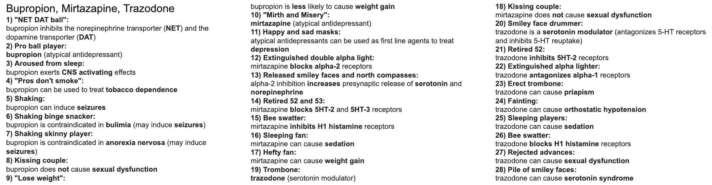
12. Benzodiazepines & Flumazenil
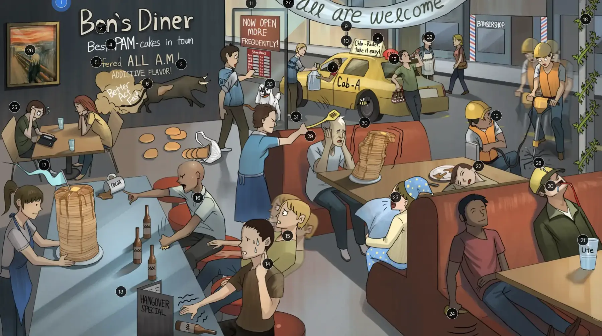
- Benzodiazepines (-pam, -olam, chlordiazepoxide) bind an allosteric site on GABA-A and increase the FREQUENCY of chloride channel opening; barbiturates increase DURATION.
- Uses: alcohol withdrawal (long-acting agents), status epilepticus, anesthesia and conscious sedation, insomnia, parasomnias, spasticity, anxiety and panic.
- Short-acting agents (oxazepam, triazolam, alprazolam, midazolam) have higher addiction potential; oxazepam, lorazepam and temazepam avoid active metabolites (safer in liver disease and elderly).
- Adverse effects: tolerance, dependence, anterograde amnesia, ataxia and falls in the elderly, additive CNS depression with alcohol, barbiturates and sedating antihistamines.
- Flumazenil is a competitive BZD-receptor antagonist that reverses benzodiazepine sedation but can precipitate seizures (and withdrawal).
- 1Ben's diner: Benzodiazepines (BZDs): positive allosteric modulators of the GABA-A receptor.
- 2PAM-cakes: The suffix '-pam' marks many benzodiazepines, e.g. diazepam, lorazepam, oxazepam.
- 3Fast ox: Oxazepam, a short-acting benzodiazepine.⭐ Oxazepam, lorazepam and temazepam (OLT) undergo glucuronidation only, with no active metabolites.
- 4'All A.M.': The suffix '-olam' marks short-acting benzodiazepines: triazolam, alprazolam, midazolam.
- 5'Addictive flavor': Benzodiazepines can cause psychological and physical dependence; the risk is greater with short-acting agents.
- 6Liver spot: Benzodiazepines are metabolized by the liver; long-acting agents form active metabolites that prolong effects, especially in the elderly and in liver disease.
- 7Cab-A: Benzodiazepines bind an allosteric site on the GABA-A receptor (between alpha and gamma subunits), not the GABA site itself.
- 8CNS light: Benzodiazepines potentiate GABA-A inhibitory transmission in the CNS.
- 9'Chlo-Rider': The GABA-A receptor is a ligand-gated chloride channel; opening causes chloride influx and hyperpolarization.
- 10'Take it easy': GABA (along with glycine) is a major inhibitory neurotransmitter of the CNS; GABA is the main one in the brain, glycine in the spinal cord.
- 11'Open more frequently': Benzodiazepines increase the frequency of chloride channel opening in the presence of GABA.⭐ Barbiturates increase the duration of opening. 'Frequency' = Benzos, 'Duration' = Barbs.
- 12Alcoholic on Cab-A: Alcohol also acts on the GABA-A receptor, at a separate allosteric site, potentiating inhibition; this is the basis of cross-tolerance with benzodiazepines.
- 13Hangover special: Benzodiazepines are first-line treatment for alcohol withdrawal.
- 14Anxious tremulous customer: Early alcohol withdrawal (about 8-12 hours): insomnia, tremor, anxiety, and autonomic hyperactivity (tachycardia, hypertension, sweating).
- 15Falling customer: Alcohol withdrawal at about 12-48 hours: withdrawal seizures (generalized tonic-clonic).
- 16Agitated customer: Alcohol withdrawal at about 48-96 hours: delirium tremens with fever, disorientation, severe agitation, hallucinations and autonomic instability.⭐ Delirium tremens is life-threatening; treat with benzodiazepines.
- 17Long tapering flag: Long-acting benzodiazepines (diazepam, chlordiazepoxide) are used in alcohol withdrawal because their long half-life and active metabolites give a self-tapering effect and smoother withdrawal.⭐ In liver disease or the elderly, lorazepam or oxazepam are preferred.
- 18Ivy: IV benzodiazepines are used for severe alcohol withdrawal, acute seizures and anesthesia.
- 19Unplugging jackhammer: Benzodiazepines (IV lorazepam, diazepam) are first-line for status epilepticus.
- 20Intubated customer: IV benzodiazepines (e.g. midazolam) are used as adjuncts in general anesthesia for muscle relaxation and amnesia.
- 21'Lite': IV benzodiazepines (e.g. midazolam) give conscious sedation for minor procedures and surgeries.
- 22Sleeping customer: Benzodiazepines (e.g. triazolam, temazepam) treat insomnia but are not first line because of dependence, tolerance and other adverse effects.
- 23Crying kid in pajamas: Benzodiazepines can treat childhood parasomnias such as sleepwalking and night terrors.
- 24Relaxing chair: Benzodiazepines treat spasticity from upper motor neuron disorders such as MS, stroke, spinal cord injury and tetanus (muscle relaxant effect).
- 25Anxious customer: Benzodiazepines treat generalized anxiety disorder, but SSRIs and SNRIs are first line.
- 26The Scream: Benzodiazepines treat panic disorder (useful for acute attacks), but SSRIs and SNRIs are first line.
- 27All are welcome: Tolerance develops with chronic use, thought to involve GABA-A receptor downregulation; abrupt cessation causes withdrawal (rebound anxiety, insomnia, seizures).
- 28Question mark hat: Benzodiazepines cause anterograde amnesia (impaired formation of new memories), which is useful during conscious sedation.
- 29Disoriented old man: Elderly patients are more sensitive to benzodiazepine effects, including somnolence, confusion and disorientation (Beers criteria).
- 30Unbalanced stack: Benzodiazepines cause central (cerebellar-type) ataxia, leading to falls and fractures in the elderly.
- 31Bee swatter smacking head: Avoid combining benzodiazepines with first-generation antihistamines and other CNS depressants (alcohol, barbiturates, neuroleptics, opioids), which risks additive CNS and respiratory depression.
- 32Barbershop next to Cab-A: Barbiturates bind a separate allosteric site on the GABA-A receptor and increase the duration of chloride channel opening; at high doses they can directly open the channel, so overdose is more dangerous.
- 33Antagonizing fluffy muzzled dog: Flumazenil is a competitive antagonist at the benzodiazepine receptor that reverses benzodiazepine sedation and overdose, but it can precipitate seizures, especially in chronic users or mixed overdoses (e.g. with TCAs).⭐ Short half-life: sedation may recur, so monitor and redose.
Show the original legend picture
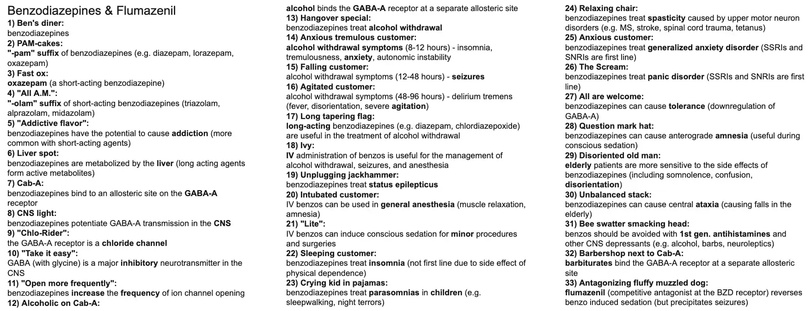
13. Nonbenzodiazepine Hypnotics, Melatonin, Ramelteon
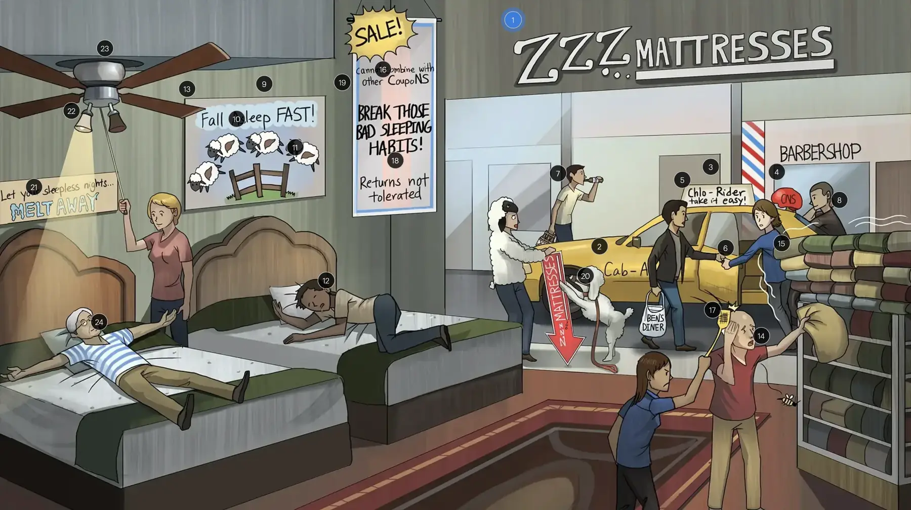
- Zolpidem, zaleplon, eszopiclone (Z-drugs) bind the benzodiazepine allosteric site on GABA-A (alpha-1 selective), increasing Cl- channel opening frequency; reversed by flumazenil (risk of seizures).
- Used for insomnia: zaleplon and zolpidem for sleep onset (rapid onset, short duration, liver metabolism); eszopiclone has the longest half-life, covering onset and maintenance.
- Adverse effects: sedation, ataxia and falls, confusion and delirium in the elderly, complex sleep behaviors; avoid with alcohol, benzodiazepines, barbiturates, and other CNS depressants.
- Compared with benzodiazepines, Z-drugs cause less tolerance, withdrawal, and dependence, and have minimal anticonvulsant or muscle relaxant effects.
- Melatonin and ramelteon act on MT1/MT2 receptors in the suprachiasmatic nucleus to regulate circadian rhythm; ramelteon is safe in the elderly with few side effects and no dependence.
- 13Zs: Zolpidem, zaleplon, and eszopiclone are the nonbenzodiazepine hypnotics (the Z-drugs). They are structurally unrelated to benzodiazepines but act on the same receptor system.⭐ Names all start or contain a Z: zolpidem, zaleplon, eszopiclone.
- 2Cab-A: Nonbenzodiazepine hypnotics such as zolpidem bind an allosteric site on the GABA-A receptor (the benzodiazepine site, with selectivity for the alpha-1 subunit), enhancing the effect of GABA.⭐ Zolpidem is relatively selective for the alpha-1 (omega-1) subunit, giving sedation with little anxiolytic, muscle relaxant, or anticonvulsant effect.
- 3Chlo-Rider: The GABA-A receptor is a ligand-gated chloride channel. GABA binding opens the channel, Cl- enters, and the neuron hyperpolarizes.
- 4CNS light: Benzodiazepines (and Z-drugs) potentiate GABA-A transmission in the CNS, producing sedation and decreased neuronal excitability.
- 5Take it easy: GABA (along with glycine) is a major inhibitory neurotransmitter in the CNS. GABA predominates in the brain, glycine in the spinal cord and brainstem.
- 6Grabbing same cab handle + Ben's diner bag: Nonbenzodiazepine hypnotics and benzodiazepines bind the same allosteric (BZD) site on GABA-A. Because they share a site, both are reversed by flumazenil.
- 7Alcoholic on Cab-A: Alcohol binds the GABA-A receptor at a separate allosteric site from benzodiazepines and Z-drugs, so effects are additive when combined.
- 8Barbershop next to Cab-A: Barbiturates bind the GABA-A receptor at a separate allosteric site from benzodiazepines and Z-drugs.⭐ Barbiturates increase the duration of Cl- channel opening, benzodiazepines increase the frequency of opening.
- 9fast: Zaleplon and zolpidem have a rapid onset of action, making them useful for patients who cannot fall asleep.
- 10Quick jump and fall: Nonbenzodiazepine hypnotics have a short duration of action (short half-lives), which limits next-day residual sedation compared with long-acting benzodiazepines.
- 11Liver spot: Zaleplon and zolpidem are rapidly metabolized by the liver (CYP3A4 predominantly), which explains their short half-lives. Inhibitors or inducers of CYP3A4 can change drug levels.
- 12Sleeping: Nonbenzodiazepine hypnotics are used to treat insomnia.
- 13Fall asleep: Zaleplon and zolpidem treat sleep-onset insomnia. Eszopiclone has the longest half-life and is effective for both sleep-onset and sleep-maintenance insomnia.
- 14Disoriented old man: Elderly patients are more sensitive to the adverse effects of nonbenzodiazepine hypnotics, including cognitive impairment, confusion, and delirium. Lower doses are used.
- 15Unbalanced stack: Nonbenzodiazepine hypnotics can cause central ataxia, leading to falls and fractures in the elderly.
- 16Cannot combine with other CoupoNS: Avoid combining nonbenzodiazepine hypnotics with other CNS depressants because of additive sedation and respiratory depression.
- 17Bee swatter smacking head: Avoid use with other CNS depressants such as first-generation antihistamines, alcohol, benzodiazepines, and barbiturates.⭐ Complex sleep behaviors (sleepwalking, sleep-driving, eating) and amnesia are classic Z-drug adverse effects, worse with alcohol.
- 18Not tolerated: Nonbenzodiazepine hypnotics are less likely than benzodiazepines to cause tolerance, though it can still occur with prolonged use.
- 19break bad habits: Nonbenzodiazepine hypnotics are less likely to cause withdrawal symptoms and physical dependence than benzodiazepines. They are still controlled substances (Schedule IV) with some abuse potential.
- 20Antagonizing fluffy muzzled dog: Flumazenil is a competitive antagonist at the benzodiazepine site and reverses the sedative effects of nonbenzodiazepine hypnotics. It can precipitate seizures, especially in patients dependent on benzodiazepines or with mixed overdoses (e.g. with TCAs).
- 21melt away: Melatonin and ramelteon (a melatonin receptor agonist) are used to treat insomnia, particularly sleep-onset insomnia and circadian rhythm disorders.
- 22Dark and light: Melatonin receptors help maintain circadian rhythm. Melatonin is released by the pineal gland in darkness and suppressed by light.
- 23Nucleus above X: MT1 and MT2 melatonin receptors are located in the suprachiasmatic nucleus of the hypothalamus (the circadian pacemaker, above the optic chiasm). Ramelteon activates these receptors.
- 24Peacefully sleeping elderly: Ramelteon has few side effects, does not cause dependence or significant cognitive impairment, and is considered safe in geriatric patients. It is not a controlled substance.
Show the original legend picture
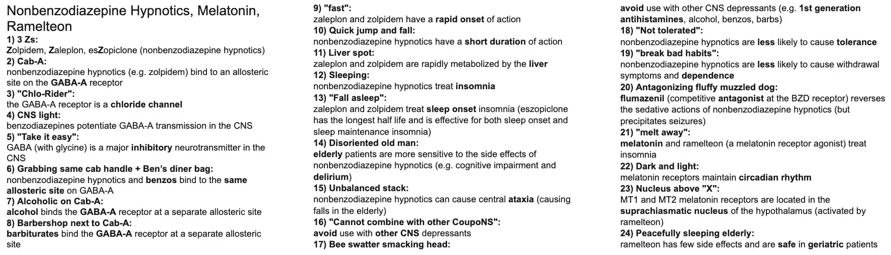
14. Barbiturates
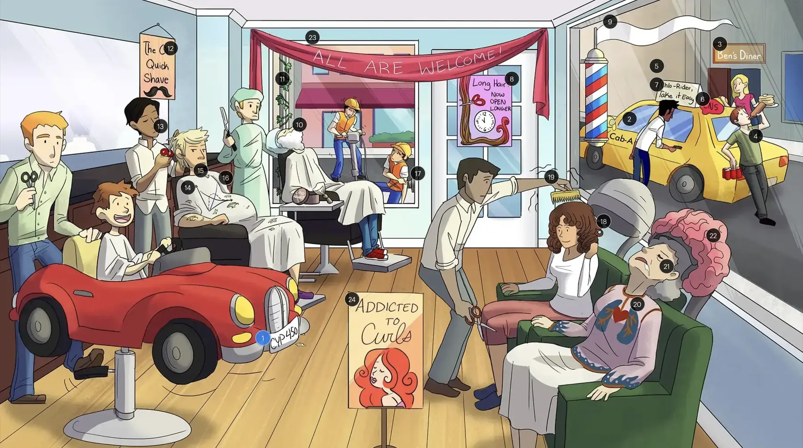
- Barbiturates (phenobarbital, thiopental, primidone) bind an allosteric GABA-A site distinct from benzodiazepines and alcohol, and increase the DURATION of Cl- channel opening.
- Potent CYP450 inducers: reduce effect of warfarin, OCPs, and other drugs; contraindicated in acute intermittent porphyria.
- Uses: thiopental for anesthesia induction (high lipid solubility, rapid redistribution to muscle and fat ends effect); phenobarbital for seizures; primidone for seizures and essential tremor (second to propranolol).
- Adverse effects: respiratory and cardiovascular depression, hypotension, severe CNS depression/coma, hangover, additive with alcohol and other depressants; no specific antidote and low safety margin.
- Chronic use causes tolerance, physical dependence, and dangerous withdrawal with seizures; avoid in the elderly.
- 1Activated chrome bumper: Barbiturates such as phenobarbital are potent inducers of the cytochrome P450 system, increasing metabolism of many drugs (warfarin, OCPs, other anticonvulsants) and reducing their effect.⭐ Chronic induction: decreased efficacy of warfarin and oral contraceptives. Barbiturates also induce hepatic aminolevulinic acid synthase and are contraindicated in acute intermittent porphyria.
- 2Cab-A: Barbiturates bind an allosteric site on the GABA-A receptor.
- 3Ben's diner next to Cab-A: Benzodiazepines bind the GABA-A receptor at a separate allosteric site from barbiturates.
- 4Alcoholic on Cab-A: Alcohol binds the GABA-A receptor at yet another separate allosteric site, so alcohol, benzodiazepines, and barbiturates have additive CNS depression.
- 5Chlo-Rider: The GABA-A receptor is a ligand-gated chloride channel; opening causes Cl- influx and hyperpolarization.
- 6CNS light: Barbiturates potentiate GABA-A transmission in the CNS, causing sedation, anxiolysis, and anticonvulsant effects.
- 7Take it easy: GABA (with glycine) is a major inhibitory neurotransmitter in the CNS.
- 8Open longer: Barbiturates increase the duration of GABA-A chloride channel opening. Benzodiazepines instead increase the frequency of opening.⭐ At high doses barbiturates directly open the channel without GABA, which explains their lower safety margin and greater lethality in overdose.
- 9Long tapering flag: Barbiturates (especially phenobarbital) have long durations of action, so hangover effects such as residual sedation and impaired cognition are more common.
- 10Intubated customer: IV thiopental can be used for induction of anesthesia.
- 11Ivy: IV administration of barbiturates is useful for induction of anesthesia (thiopental) and management of seizures (phenobarbital).
- 12The ol' quick shave: Thiopental has a rapid onset and short duration of action because it is highly lipid soluble and rapidly enters the brain.
- 13Hair redistributed onto arms and belly: Plasma levels of thiopental fall rapidly because the drug redistributes from the brain to skeletal muscle and adipose tissue, not because of metabolism.
- 14Decay line: The plasma thiopental concentration decays rapidly because of redistribution.
- 15Brief peak: Thiopental accumulates rapidly in brain tissue and then rapidly redistributes out, so the CNS effect is brief.
- 16Growth line: Thiopental accumulates in skeletal muscle and adipose tissue over time; this redistribution is the mechanism of recovery from anesthesia after a single dose.
- 17Unplugging jackhammer: IV phenobarbital can be used to treat seizures, including status epilepticus (after benzodiazepines) and neonatal seizures.⭐ Phenobarbital is first-line for neonatal seizures and also used for partial and generalized tonic-clonic seizures.
- 18Perm is done!: Primidone is a barbiturate prodrug (metabolized to phenobarbital) used to treat seizures and essential tremor.
- 19Tremulous hand: Primidone treats essential tremor, with propranolol as first-line therapy.
- 20Collapsed heart and lungs: Barbiturates can cause profound cardiac and respiratory depression, especially in overdose or combined with other depressants.⭐ Barbiturate overdose has no specific antidote; treatment is supportive (airway, ventilation, urinary alkalinization can help phenobarbital elimination). Flumazenil does not reverse barbiturates.
- 21Fainting: Barbiturates can cause hypotension.
- 22Brain hair dryer: Barbiturates can cause severe CNS depression, including coma, and should be avoided in the elderly.
- 23All are welcome: Chronic barbiturate use leads to tolerance (due in part to enzyme induction and CNS adaptation). The lethal dose does not rise as much as the sedative dose, narrowing the margin of safety.
- 24Addicted: Chronic barbiturate use leads to physical dependence. Abrupt withdrawal can cause severe anxiety, tremor, delirium, and life-threatening seizures.
Show the original legend picture
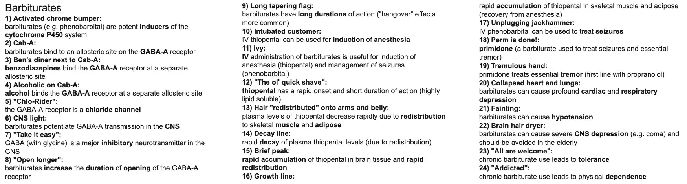
15. Opioids, Naloxone, Naltrexone
- Opioid receptors (mu, kappa, delta) are Gi/o-coupled: open K+ channels, close presynaptic Ca2+ channels, and reduce neurotransmitter release; mu mediates analgesia, sedation, respiratory depression, miosis, constipation.
- Agents: morphine, fentanyl, tramadol (weak mu agonist plus SNRI action, lowers seizure threshold), loperamide and diphenoxylate (antidiarrheals), codeine and dextromethorphan (antitussives; dextromethorphan is an NMDA antagonist).
- Toxicity: respiratory depression, pinpoint pupils, constipation, biliary colic, sedation; tolerance develops to most effects except miosis and constipation; chronic use can cause hyperalgesia and withdrawal with rhinorrhea, yawning, diarrhea, and anxiety.
- Opioid use disorder treatment: methadone (long-acting full agonist) and buprenorphine (long-acting partial mu agonist); partial agonists can precipitate withdrawal; neonatal abstinence syndrome in exposed infants.
- Antagonists: naloxone reverses acute overdose (short-acting, can precipitate withdrawal); naltrexone maintains abstinence in opioid and alcohol use disorder and is used for weight loss with bupropion.
- 1Utopia: Opiates are drugs derived from or acting like opium (poppy) alkaloids, acting on endogenous opioid receptors (mu, kappa, delta) for analgesia and related effects.
- 2Mu massage: The mu-opioid receptor mediates most clinical and adverse effects: analgesia, euphoria, sedation, respiratory depression, miosis, and constipation.⭐ Kappa: spinal analgesia, dysphoria, miosis. Delta: analgesia, antidepressant-like effects.check original
- 3Open banana barrels: Opioid receptors are Gi/o-coupled; they open K+ channels, causing efflux and hyperpolarization of the postsynaptic neuron.
- 4Closed Calci-Yum ice cream cooler: Opioid receptors close presynaptic voltage-gated Ca2+ channels and decrease cAMP.
- 5Disconnected presynaptic wire: Closing presynaptic voltage-gated Ca2+ channels prevents neurotransmitter release (glutamate, acetylcholine, norepinephrine, serotonin, substance P), which blunts pain transmission.
- 6Fantasy: Fentanyl is a potent, short-acting synthetic opioid analgesic (about 100x morphine), used IV, epidural, and transdermally for severe pain and anesthesia.
- 7More fun: Morphine is the prototype opioid analgesic used for severe pain, including acute MI pain and acute pulmonary edema (reduces preload and anxiety).
- 8Distant tram: Tramadol is a weak mu-opioid receptor agonist used to manage chronic pain.
- 9North-South: Tramadol also inhibits reuptake of norepinephrine and serotonin.⭐ Tramadol lowers the seizure threshold and can cause serotonin syndrome, especially with SSRIs, SNRIs, or MAOIs.
- 10Colon massage table: Opioid receptors are located in the GI tract; activation delays stool transit and increases fluid absorption, causing constipation.check original
- 11Removed muddy slippers: Opioids such as loperamide and diphenoxylate are used as antidiarrheals.
- 12Lop-eared rabbit: Loperamide is an opioid antidiarrheal that acts on gut mu-receptors and has minimal CNS effects because it does not cross the blood-brain barrier well (P-glycoprotein efflux).⭐ Loperamide is contraindicated in invasive or bloody diarrhea and C. difficile colitis. Very high doses can cause cardiac toxicity (QT prolongation).
- 13Loping back and forth: Loperamide increases colonic phasic segmentation, which slows propulsion and increases stool transit time.
- 14Dolphins: Diphenoxylate is an opioid antidiarrheal, combined with atropine (Lomotil) to discourage abuse.
- 15Barcode: Codeine is an opioid antitussive (cough suppressant) and a weak analgesic.⭐ Codeine is a prodrug activated to morphine by CYP2D6; ultrarapid metabolizers are at risk of toxicity (avoid in children and breastfeeding mothers).
- 16Orphan: Dextromethorphan is a nonaddictive antitussive that is a synthetic codeine analog.
- 17Tethered nomadic camel: Dextromethorphan antagonizes NMDA receptors; at high doses it can cause dissociative effects and hallucinations.⭐ Dextromethorphan with MAOIs or SSRIs can cause serotonin syndrome.
- 18Cerebral towel: Opiates cause CNS depression, including sedation, and can cause euphoria.
- 19Deflated lung vest: Opiates can cause respiratory depression by decreasing the brainstem response to CO2. This is the usual cause of death in overdose.
- 20Constricted hood: Opiates cause miosis (pinpoint pupils) via stimulation of the Edinger-Westphal nucleus.⭐ Pinpoint pupils plus respiratory depression and coma is the classic opioid overdose triad. Meperidine is an exception that can cause mydriasis in overdose.
- 21Plunger: Opiates cause constipation, because of decreased GI motility and secretions.
- 22Biliary tree: Opiates can cause biliary colic by contracting biliary smooth muscle and the sphincter of Oddi.
- 23All are welcome: Patients can develop tolerance to opiates, including to analgesia, euphoria, sedation, and respiratory depression.
- 24Out of order: Tolerance does not develop to miosis or constipation, so these effects persist with chronic use.
- 25Causing pain: Opioid-induced hyperalgesia (increased pain sensitivity) can occur with chronic opioid use.
- 26Anxious, hot, and moist: Opioid withdrawal causes rhinorrhea, lacrimation, yawning, hyperventilation, hyperthermia, muscle aches, vomiting, diarrhea, and anxiety. It is very unpleasant but rarely life-threatening.⭐ Treat with methadone or buprenorphine; clonidine can reduce autonomic symptoms.
- 27DONE timer: Methadone is a long-acting opioid (full mu agonist) used to attenuate withdrawal symptoms and for maintenance therapy of opioid use disorder; it can also treat chronic pain.⭐ Methadone can prolong the QT interval and is also an NMDA antagonist.
- 28Long tapering flag: Methadone and buprenorphine have long half-lives, which makes them useful in opioid detoxification and maintenance with less euphoria and fewer withdrawal swings.
- 29Blueprint: Buprenorphine is a long-acting partial mu-opioid agonist used to attenuate withdrawal symptoms and for maintenance treatment of opioid use disorder.⭐ Often given sublingually combined with naloxone to deter IV misuse. Has a ceiling effect on respiratory depression, so it is safer in overdose than full agonists.
- 30Irritable, moist, tachypneic baby: Neonatal abstinence syndrome occurs in infants of opioid-dependent mothers: diarrhea, sweating, sneezing, crying, tachypnea, and irritability.
- 31Partial massage: Partial mu-opioid agonists (buprenorphine, and by the scene nalbuphine and butorphanol) activate the receptor with lower intrinsic activity than full agonists.⭐ Nalbuphine and butorphanol are kappa agonists with mu partial agonist or antagonist activity.check original
- 32Bluefin: The 'bu-phin' stem marks the partial opioid agonists, such as buprenorphine, nalbuphine, and butorphanol.
- 33Falling into the withdraw spa: Partial mu-opioid agonists can precipitate withdrawal in patients dependent on full agonists, because they displace the full agonist while providing less receptor activation.
- 34No lax zone: Naloxone is a mu-opioid receptor antagonist (competitive) used to reverse acute opioid toxicity. It can precipitate withdrawal in dependent patients.⭐ Naloxone has a short half-life (1-2 hours) so repeat dosing or an infusion may be needed after long-acting opioids like methadone.
- 35No tricks zone: Naltrexone is a long-acting opioid receptor antagonist that helps maintain abstinence in patients with opioid (heroin) use disorder, given orally or as a monthly injection.⭐ Patients must be opioid-free before starting or it precipitates withdrawal. Monitor liver function.
- 36Tempting alcohol: Naltrexone (mu-opioid antagonist) helps reduce cravings for alcohol and nicotine.⭐ Naltrexone is first-line for alcohol use disorder, in contrast to disulfiram or acamprosate.
- 37Getting fit: Naltrexone can help with weight loss, as when combined with bupropion.
Show the original legend picture
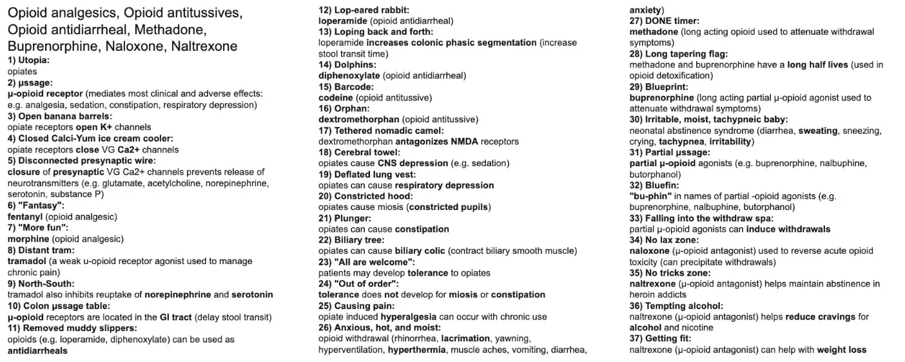
16. Varenicline
- Nicotine is a nicotinic ACh receptor agonist (ligand-gated Na+/Ca2+ channel) causing dopamine release in the reward pathway; tolerance, dependence, and withdrawal drive relapse; CYP2A6 metabolizes it.
- Varenicline is a partial agonist at alpha4-beta2 nicotinic receptors: relieves craving and withdrawal while blocking nicotine reward; used for smoking cessation, 12-week course.
- Titrate up (0.5 mg daily x3 days, 0.5 mg BID x4 days, then 1 mg BID); reduce dose when CrCl is below 30 mL/min.
- Adverse effects: nausea/vomiting (most common), constipation, flatulence, vivid dreams; also neuropsychiatric effects, seizure risk, alcohol intolerance, possible CV events.
- Avoid varenicline with high-dose NRT; NRT is titrated down. After quitting smoking, CYP1A2 induction is lost, so theophylline, warfarin, clozapine levels can rise (monitor/adjust).
- 1Smokey holding up 1 claw: Smoking is the leading cause of preventable disease and death in the US (lung cancer, COPD, CAD, stroke, PAD). Cessation counseling plus pharmacotherapy at every visit is high-yield.⭐ Combining counseling with medication roughly doubles quit rates versus either alone.
- 2Trail map with interconnecting paths: Tobacco addiction is multifactorial: pharmacologic (nicotine), learned/conditioned cues, genetic, and social/environmental factors all interact, so treatment is usually multimodal.
- 3Happy smoking hiker with salty sodium peanuts, Calci-Yum milk, rope: Nicotine is an agonist at nicotinic acetylcholine receptors (ligand-gated cation channels) in the brain. Channel opening causes Na+ influx and depolarization, which opens voltage-gated Ca2+ channels for further Ca2+ influx and triggers neurotransmitter release (notably dopamine in the mesolimbic reward pathway), improving mood and producing reward.⭐ Varenicline targets the alpha4-beta2 nicotinic receptor subtype.
- 4Frayed reinforcements + dependence: With repeated exposure, tolerance develops and the primary reinforcing effects diminish. Physical dependence follows, so withdrawal symptoms (irritability, anxiety, poor concentration, increased appetite, insomnia, craving) occur when nicotine is absent.
- 5P450 license plate: Nicotine levels depend on rate of metabolism, mainly by CYP2A6. Faster metabolizers clear nicotine quickly and tend to smoke more and have more difficulty quitting.
- 6Replacement Firefighter Nico: Nicotine replacement therapy (NRT) substitutes nicotine from tobacco with safer sources (gum, lozenges, patches, inhaler, nasal spray) that avoid tar and combustion products. It is designed to be titrated down over time. Patch plus a short-acting form (gum or lozenge) is more effective than a single form.
- 7Firefighter Varenica: Varenicline is a partial agonist at nicotinic receptors (alpha4-beta2) indicated for smoking cessation. It provides modest receptor stimulation (reducing craving and withdrawal) while blocking nicotine from the receptor, which reduces the reward from smoking.⭐ Among the most effective single agents for cessation; superior to bupropion and to single-form NRT in trials.
- 8Pressure adjuster: Varenicline is started with upward dose titration: 0.5 mg once daily for 3 days, then 0.5 mg twice daily for 4 days, then 1 mg twice daily; a usual course is 12 weeks. Patients typically set a quit date about 1 week after starting. Slow titration limits nausea.
- 9Falling brain helmet: Neuropsychiatric adverse effects have been reported (mood changes, agitation, psychosis, hallucinations, suicidal ideation or attempts). Monitor patients for mood and behavior changes and stop the drug if they occur.⭐ The former boxed warning was removed after large trials showed no significant excess of serious neuropsychiatric events, but monitoring is still advised.
- 10Shaking ladder: Varenicline has been associated with new or worsening seizures; use caution in patients with a seizure history.
- 11Alcohol warning sign: Varenicline may increase the effects of alcohol (decreased tolerance, unusual or aggressive behavior, amnesia). Patients should reduce alcohol intake until they know how varenicline affects them.
- 12Heart patch + Varenica balancing: Varenicline may increase the risk of cardiovascular events (MI, stroke), though the data are limited. This concern should be weighed against the substantial cardiovascular benefit of quitting smoking.
- 13No Road Thru: Combining varenicline with high-dose NRT is associated with intolerable adverse effects (nausea, headache, dizziness) and treatment discontinuation, so avoid the combination.
- 14Damaged P450 license plate: Smoking cessation can change the pharmacokinetics of other drugs. Polycyclic aromatic hydrocarbons in smoke induce CYP1A2, so after quitting CYP1A2 activity falls and levels of substrates such as theophylline (and warfarin, clozapine, olanzapine) can rise toward toxicity. Consider therapeutic drug monitoring and dose reduction.⭐ Classic: patient on theophylline or clozapine quits smoking and develops toxicity.
- 15Adjustable, shrivelled kidney tank on LOW: Varenicline is renally eliminated, largely unchanged. Reduce the dose in severe renal impairment (estimated CrCl below 30 mL/min), with a lower maximum daily dose.
- 16Vomiting firefighter: Nausea and vomiting are the most common adverse effects of varenicline; taking it with food and a full glass of water helps.⭐ Nausea is the most common adverse effect and the usual reason for discontinuation.
- 17Blocked truck: Constipation is a common adverse effect of varenicline.
- 18Tailpipe exhaust: Flatulence is a common adverse effect of varenicline.
- 19Dreaming bear: Patients may report vivid, unusual, or strange dreams (and insomnia) with varenicline.
Show the original legend picture
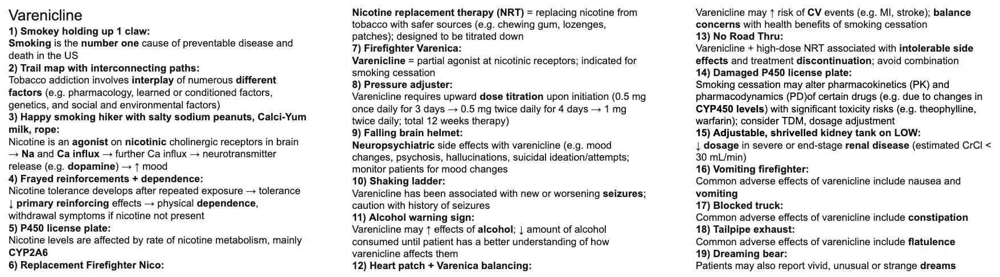
17. Amphetamine, Dexamphetamine, Lisdexamfetamine, Methylphenidate
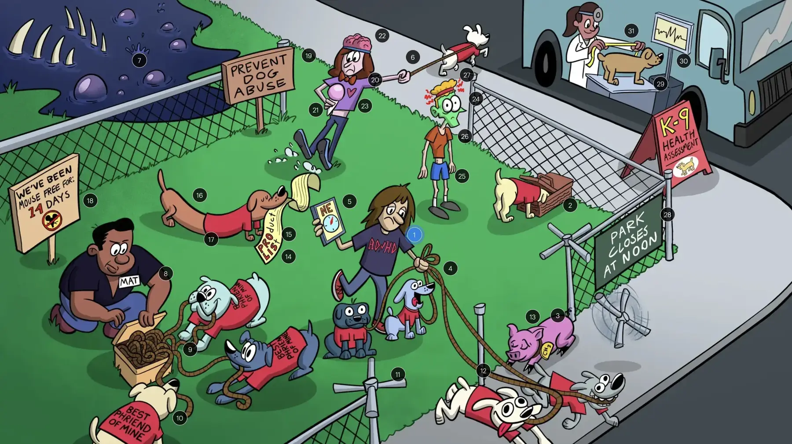
- Indications: ADHD (all four), narcolepsy (methylphenidate and amphetamines), binge eating disorder (lisdexamfetamine).
- Amphetamines: TAAR1 agonism, VMAT2 inhibition, and reversal of DAT/NET cause release of dopamine and NE; methylphenidate simply blocks DAT/NET reuptake.
- Lisdexamfetamine is a long-acting prodrug (lysine cleaved in RBCs to dextroamphetamine) with lower euphoria and abuse potential.
- Contraindications: MAOI use or within 14 days, hyperthyroidism, pheochromocytoma; caution with substance abuse, psychiatric and cardiovascular disease.
- Adverse effects: insomnia, weight loss, nausea, headache; avoid afternoon/evening dosing; monitor weight, CV function, and height in children.
- 1AD/HD shirt: Attention-deficit/hyperactivity disorder (ADHD) is the primary indication for amphetamine, dextroamphetamine, lisdexamfetamine, and methylphenidate. Stimulants are first-line pharmacotherapy.⭐ Paradoxically calming in ADHD because they enhance prefrontal dopamine and norepinephrine signaling (attention and executive control).
- 2Dog binging on picnic: Moderate to severe binge eating disorder can be treated with psychostimulants; lisdexamfetamine is the FDA-approved agent for this.
- 3Narcoleptic pig + CH3 collar: Narcolepsy is another indication (classically methylphenidate; amphetamines are also used). The CH3 collar marks methylphenidate.
- 4Rope: Dopamine, the monoamine neurotransmitter represented by the rope, mediates reward, motivation, and attention.
- 5NE compass: Norepinephrine (NE, noradrenaline) is the second key monoamine; it promotes alertness, attention, and sympathetic activation.
- 6Hyper dogs releasing ropes: Amphetamines increase release of monoamines (dopamine, norepinephrine, and some serotonin) from presynaptic terminals, rather than just blocking reuptake.
- 7Tar pit: Amphetamine is an agonist of trace amine-associated receptor 1 (TAAR1), an intracellular receptor in monoaminergic neurons; this signaling promotes transporter reversal and release of monoamines.
- 8V-neck + Mat the dog walker: Vesicular monoamine transporter 2 (VMAT2) packages cytosolic monoamines (dopamine, NE, serotonin) into synaptic vesicles.⭐ Reserpine and tetrabenazine also inhibit VMAT2, but they deplete monoamines.
- 9Inhibiting Mat from packing ropes: Amphetamine inhibits VMAT2, so dopamine is not stored in vesicles. Cytosolic dopamine rises and becomes available for reverse transport out of the neuron.
- 10"Best Phriend of Mine" dog vest: Identifies amphetamine (the stimulant that acts as the releasing agent) in the scene.
- 11Turnstile: Plasma membrane monoamine transporters (dopamine transporter DAT, norepinephrine transporter NET/NAT) normally reuptake dopamine and NE from the synapse, ending their action.
- 12Turnstile spinning in reverse + dogs escaping with rope: Amphetamines reverse the direction of DAT and NET, so instead of reuptake, dopamine and norepinephrine flow out of the neuron into the synapse (non-vesicular efflux), increasing synaptic levels.
- 13Sleeping pig with CH3 collar blocking turnstile: Methylphenidate is a reuptake blocker of DAT and NET; it increases synaptic dopamine and NE without causing substantial release.⭐ Amphetamine = releaser and reuptake reverser; methylphenidate = pure reuptake blocker.
- 14LISt: LISdexamfetamine: the LIS in the name is the mnemonic for lisdexamfetamine.
- 15PROduct: Lisdexamfetamine is a prodrug: it is inactive until red blood cells hydrolyze it, cleaving off lysine to release active dextroamphetamine.
- 16Long dog: Lisdexamfetamine is long-acting because conversion to the active drug is gradual (once-daily dosing).
- 17Low belly: Because activation is rate-limited and slow, it produces less euphoria and has lower abuse and diversion potential than immediate-release amphetamines. It is also less effective if taken by non-oral routes.
- 18"We've been mouse free for 14 days": Contraindicated during or within 14 days of stopping a monoamine oxidase inhibitor, because of the risk of hypertensive crisis from excessive sympathetic activation (and serotonin-type reactions).
- 19"Prevent Dog Abuse": Precaution in patients with a history of drug abuse or dependence; stimulants are Schedule II controlled substances with misuse and diversion risk.
- 20Red bow tie: Contraindicated in hyperthyroidism (neck bow tie represents the thyroid) because of additive sympathetic overactivation (tachycardia, arrhythmia).
- 21Frozen, chromatic shaved ice: Contraindicated in pheochromocytoma (chromaffin cell tumor) because of risk of hypertensive crisis from sympathetic overactivation.
- 22Brain hat: Use with caution in psychiatric disorders; stimulants can precipitate or worsen psychosis, mania, anxiety, agitation, or tics.
- 23Heart patch: Use with caution in cardiovascular disorders; stimulants raise heart rate and blood pressure and are linked to arrhythmia and sudden death in those with structural heart disease.
- 24Stimulated, awake person: Insomnia is a common side effect owing to increased alertness.
- 25Thin person: Weight loss and decreased appetite are common; in children this can lead to growth suppression.
- 26Nauseated: Nausea (and abdominal pain) is a common side effect.
- 27Tight headband: Headache is a common side effect.
- 28"Park Closes at Noon": Avoid dosing in the early afternoon or evening to minimize insomnia.
- 29Scales: Monitor weight (assessment of weight loss and appetite suppression).
- 30EKG machine: Monitor cardiovascular function (heart rate, blood pressure, ECG as appropriate).
- 31Measuring length: Monitor height in children, because chronic stimulant use can slow growth velocity.
Show the original legend picture
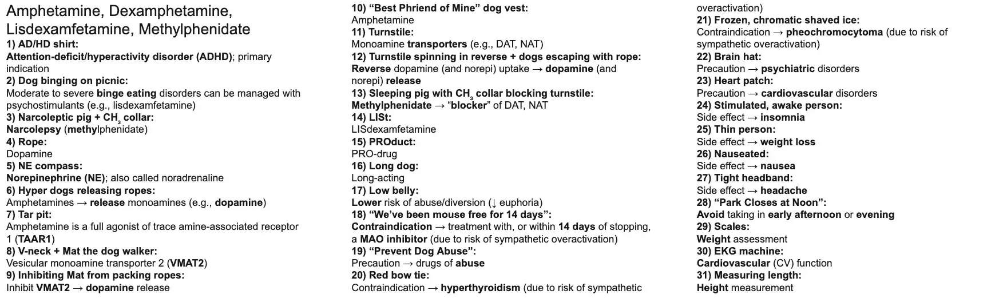